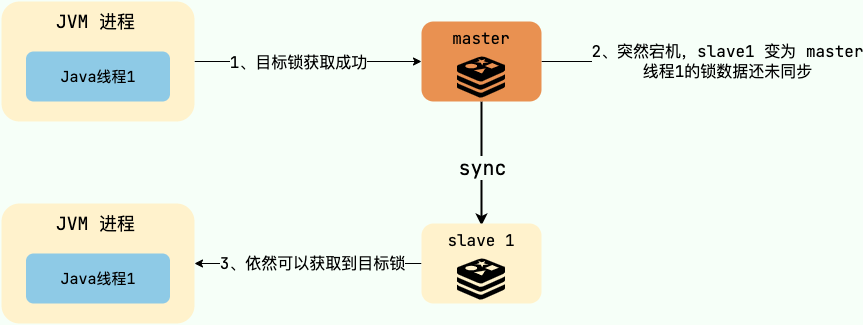
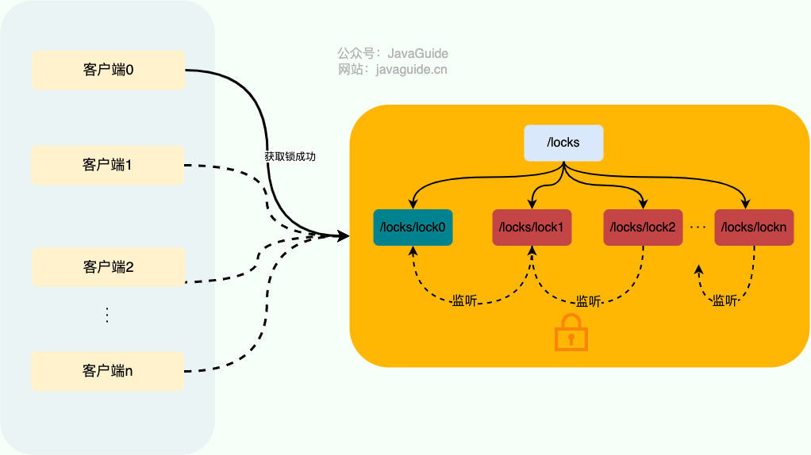

CAP 理论
CAP 理论/定理起源于 2000 年，由加州大学伯克利分校的 Eric Brewer 教授在分布式计算原理研讨会（PODC）上提出，因此 CAP 定理又被称作 布鲁尔定理（Brewer’s theorem）
2 年后，麻省理工学院的 Seth Gilbert 和 Nancy Lynch 发表了布鲁尔猜想的证明，CAP 理论正式成为分布式领域的定理。
CAP 也就是 Consistency（一致性）、Availability（可用性）、Partition Tolerance（分区容错性） 这三个单词首字母组合。
CAP 理论的提出者布鲁尔在提出 CAP 猜想的时候，并没有详细定义 Consistency、Availability、Partition Tolerance 三个单词的明确定义。
因此，对于 CAP 的民间解读有很多，一般比较被大家推荐的是下面 👇 这种版本的解读。
在理论计算机科学中，CAP 定理（CAP theorem）指出对于一个分布式系统来说，当设计读写操作时，只能同时满足以下三点中的两个：
- 一致性（Consistency） : 所有节点访问同一份最新的数据副本
- 可用性（Availability）: 非故障的节点在合理的时间内返回合理的响应（不是错误或者超时的响应）。
- 分区容错性（Partition Tolerance） : 分布式系统出现网络分区的时候，仍然能够对外提供服务。
什么是网络分区？
分布式系统中，多个节点之间的网络本来是连通的，但是因为某些故障（比如部分节点网络出了问题）某些节点之间不连通了，整个网络就分成了几块区域，这就叫 网络分区。
不是所谓的“3 选 2”
大部分人解释这一定律时，常常简单的表述为：“一致性、可用性、分区容忍性三者你只能同时达到其中两个，不可能同时达到”。实际上这是一个非常具有误导性质的说法，而且在 CAP 理论诞生 12 年之后，CAP 之父也在 2012 年重写了之前的论文。
当发生网络分区的时候，如果我们要继续服务，那么强一致性和可用性只能 2 选 1。也就是说当网络分区之后 P 是前提，决定了 P 之后才有 C 和 A 的选择。也就是说分区容错性（Partition tolerance）我们是必须要实现的。
简而言之就是：CAP 理论中分区容错性 P 是一定要满足的，在此基础上，只能满足可用性 A 或者一致性 C。
因此，分布式系统理论上不可能选择 CA 架构，只能选择 CP 或者 AP 架构。 比如 ZooKeeper、HBase 就是 CP 架构，Cassandra、Eureka 就是 AP 架构，Nacos 不仅支持 CP 架构也支持 AP 架构。
为啥不可能选择 CA 架构呢？ 举个例子：若系统出现“分区”，系统中的某个节点在进行写操作。为了保证 C， 必须要禁止其他节点的读写操作，这就和 A 发生冲突了。如果为了保证 A，其他节点的读写操作正常的话，那就和 C 发生冲突了。
选择 CP 还是 AP 的关键在于当前的业务场景，没有定论，比如对于需要确保强一致性的场景如银行一般会选择保证 CP 。
另外，需要补充说明的一点是：如果网络分区正常的话（系统在绝大部分时候所处的状态），也就说不需要保证 P 的时候，C 和 A 能够同时保证
CAP 实际应用案例
我这里以注册中心来探讨一下 CAP 的实际应用。考虑到很多小伙伴不知道注册中心是干嘛的，这里简单以 Dubbo 为例说一说。
下图是 Dubbo 的架构图。注册中心 Registry 在其中扮演了什么角色呢？提供了什么服务呢？
注册中心负责服务地址的注册与查找，相当于目录服务，服务提供者和消费者只在启动时与注册中心交互，注册中心不转发请求，压力较小。
常见的可以作为注册中心的组件有：ZooKeeper、Eureka、Nacos…。
- ZooKeeper 保证的是 CP。 任何时刻对 ZooKeeper 的读请求都能得到一致性的结果，但是， ZooKeeper 不保证每次请求的可用性比如在 Leader 选举过程中或者半数以上的机器不可用的时候服务就是不可用的。
- Eureka 保证的则是 AP。 Eureka 在设计的时候就是优先保证 A （可用性）。在 Eureka 中不存在什么 Leader 节点，每个节点都是一样的、平等的。因此 Eureka 不会像 ZooKeeper 那样出现选举过程中或者半数以上的机器不可用的时候服务就是不可用的情况。 Eureka 保证即使大部分节点挂掉也不会影响正常提供服务，只要有一个节点是可用的就行了。只不过这个节点上的数据可能并不是最新的。
- Nacos 不仅支持 CP 也支持 AP。
🐛 修正（参见：issue#1906）：
ZooKeeper 通过可线性化（Linearizable）写入、全局 FIFO 顺序访问等机制来保障数据一致性。多节点部署的情况下， ZooKeeper 集群处于 Quorum 模式。Quorum 模式下的 ZooKeeper 集群， 是一组 ZooKeeper 服务器节点组成的集合，其中大多数节点必须同意任何变更才能被视为有效。
由于 Quorum 模式下的读请求不会触发各个 ZooKeeper 节点之间的数据同步，因此在某些情况下还是可能会存在读取到旧数据的情况，导致不同的客户端视图上看到的结果不同，这可能是由于网络延迟、丢包、重传等原因造成的。ZooKeeper 为了解决这个问题，提供了 Watcher 机制和版本号机制来帮助客户端检测数据的变化和版本号的变更，以保证数据的一致性。
总结
在进行分布式系统设计和开发时，我们不应该仅仅局限在 CAP 问题上，还要关注系统的扩展性、可用性等等
在系统发生“分区”的情况下，CAP 理论只能满足 CP 或者 AP。要注意的是，这里的前提是系统发生了“分区”
如果系统没有发生“分区”的话，节点间的网络连接通信正常的话，也就不存在 P 了。这个时候，我们就可以同时保证 C 和 A 了。
总结：如果系统发生“分区”，我们要考虑选择 CP 还是 AP。如果系统没有发生“分区”的话，我们要思考如何保证 CA 。
推荐阅读
- CAP 定理简化 （英文，有趣的案例）
- 神一样的 CAP 理论被应用在何方 （中文，列举了很多实际的例子）
- 请停止呼叫数据库 CP 或 AP （英文，带给你不一样的思考）
BASE 理论
BASE 理论起源于 2008 年， 由 eBay 的架构师 Dan Pritchett 在 ACM 上发表。
简介
BASE 是 Basically Available（基本可用）、Soft-state（软状态） 和 Eventually Consistent（最终一致性） 三个短语的缩写。BASE 理论是对 CAP 中一致性 C 和可用性 A 权衡的结果，其来源于对大规模互联网系统分布式实践的总结，是基于 CAP 定理逐步演化而来的，它大大降低了我们对系统的要求。
BASE 理论的核心思想
即使无法做到强一致性，但每个应用都可以根据自身业务特点，采用适当的方式来使系统达到最终一致性。
也就是牺牲数据的一致性来满足系统的高可用性，系统中一部分数据不可用或者不一致时，仍需要保持系统整体“主要可用”。
BASE 理论本质上是对 CAP 的延伸和补充，更具体地说，是对 CAP 中 AP 方案的一个补充。
为什么这样说呢？
CAP 理论这节我们也说过了：
如果系统没有发生“分区”的话，节点间的网络连接通信正常的话，也就不存在 P 了。这个时候，我们就可以同时保证 C 和 A 了。因此，如果系统发生“分区”，我们要考虑选择 CP 还是 AP。如果系统没有发生“分区”的话，我们要思考如何保证 CA 。
因此，AP 方案只是在系统发生分区的时候放弃一致性，而不是永远放弃一致性。在分区故障恢复后，系统应该达到最终一致性。这一点其实就是 BASE 理论延伸的地方。
BASE 理论三要素

基本可用
基本可用是指分布式系统在出现不可预知故障的时候，允许损失部分可用性。但是，这绝不等价于系统不可用。
什么叫允许损失部分可用性呢？
- 响应时间上的损失: 正常情况下，处理用户请求需要 0.5s 返回结果，但是由于系统出现故障，处理用户请求的时间变为 3 s。
- 系统功能上的损失：正常情况下，用户可以使用系统的全部功能，但是由于系统访问量突然剧增，系统的部分非核心功能无法使用。
软状态
软状态指允许系统中的数据存在中间状态（CAP 理论中的数据不一致），并认为该中间状态的存在不会影响系统的整体可用性，即允许系统在不同节点的数据副本之间进行数据同步的过程存在延时。
最终一致性
最终一致性强调的是系统中所有的数据副本，在经过一段时间的同步后，最终能够达到一个一致的状态。因此，最终一致性的本质是需要系统保证最终数据能够达到一致，而不需要实时保证系统数据的强一致性。
分布式一致性的 3 种级别：
- 强一致性：系统写入了什么，读出来的就是什么。
- 弱一致性：不一定可以读取到最新写入的值，也不保证多少时间之后读取到的数据是最新的，只是会尽量保证某个时刻达到数据一致的状态。
- 最终一致性：弱一致性的升级版，系统会保证在一定时间内达到数据一致的状态。
业界比较推崇是最终一致性级别，但是某些对数据一致要求十分严格的场景比如银行转账还是要保证强一致性。
那实现最终一致性的具体方式是什么呢? 《分布式协议与算法实战》 中是这样介绍：
- 读时修复 : 在读取数据时，检测数据的不一致，进行修复。比如 Cassandra 的 Read Repair 实现，具体来说，在向 Cassandra 系统查询数据的时候，如果检测到不同节点的副本数据不一致，系统就自动修复数据。
- 写时修复 : 在写入数据，检测数据的不一致时，进行修复。比如 Cassandra 的 Hinted Handoff 实现。具体来说，Cassandra 集群的节点之间远程写数据的时候，如果写失败 就将数据缓存下来，然后定时重传，修复数据的不一致性。
- 异步修复 : 这个是最常用的方式，通过定时对账检测副本数据的一致性，并修复。
比较推荐 写时修复，这种方式对性能消耗比较低。
总结
ACID 是数据库事务完整性的理论，CAP 是分布式系统设计理论，BASE 是 CAP 理论中 AP 方案的延伸。
Paxos 算法详解
背景
Paxos 算法是 Leslie Lamport（莱斯利·兰伯特）在 1990 年提出了一种分布式系统 共识 算法。这也是第一个被证明完备的共识算法（前提是不存在拜占庭将军问题，也就是没有恶意节点）。
为了介绍 Paxos 算法，兰伯特专门写了一篇幽默风趣的论文。在这篇论文中，他虚拟了一个叫做 Paxos 的希腊城邦来更形象化地介绍 Paxos 算法。
不过，审稿人并不认可这篇论文的幽默。于是，他们就给兰伯特说：“如果你想要成功发表这篇论文的话，必须删除所有 Paxos 相关的故事背景”。兰伯特一听就不开心了：“我凭什么修改啊，你们这些审稿人就是缺乏幽默细胞，发不了就不发了呗！”。
于是乎，提出 Paxos 算法的那篇论文在当时并没有被成功发表。
直到 1998 年，系统研究中心 (Systems Research Center，SRC）的两个技术研究员需要找一些合适的分布式算法来服务他们正在构建的分布式系统，Paxos 算法刚好可以解决他们的部分需求。因此，兰伯特就把论文发给了他们。在看了论文之后，这俩大佬觉得论文还是挺不错的。于是，兰伯特在 1998 年重新发表论文 《The Part-Time Parliament》。
论文发表之后，各路学者直呼看不懂，言语中还略显调侃之意。这谁忍得了，在 2001 年的时候，兰伯特专门又写了一篇 《Paxos Made Simple》 的论文来简化对 Paxos 的介绍，主要讲述两阶段共识协议部分，顺便还不忘嘲讽一下这群学者。
《Paxos Made Simple》这篇论文就 14 页，相比于 《The Part-Time Parliament》的 33 页精简了不少。最关键的是这篇论文的摘要就一句话：
The Paxos algorithm, when presented in plain English, is very simple.
翻译过来的意思大概就是：当我用无修饰的英文来描述时，Paxos 算法真心简单！
介绍
Paxos 算法是第一个被证明完备的分布式系统共识算法。共识算法的作用是让分布式系统中的多个节点之间对某个提案（Proposal）达成一致的看法。提案的含义在分布式系统中十分宽泛，像哪一个节点是 Leader 节点、多个事件发生的顺序等等都可以是一个提案。
兰伯特当时提出的 Paxos 算法主要包含 2 个部分:
- Basic Paxos 算法：描述的是多节点之间如何就某个值(提案 Value)达成共识。
- Multi-Paxos 思想：描述的是执行多个 Basic Paxos 实例，就一系列值达成共识。Multi-Paxos 说白了就是执行多次 Basic Paxos ，核心还是 Basic Paxos 。
由于 Paxos 算法在国际上被公认的非常难以理解和实现，因此不断有人尝试简化这一算法。到了 2013 年才诞生了一个比 Paxos 算法更易理解和实现的共识算法—Raft 算法 。更具体点来说，Raft 是 Multi-Paxos 的一个变种，其简化了 Multi-Paxos 的思想，变得更容易被理解以及工程实现。
针对没有恶意节点的情况，除了 Raft 算法之外，当前最常用的一些共识算法比如 ZAB 协议、 Fast Paxos 算法都是基于 Paxos 算法改进的。
针对存在恶意节点的情况，一般使用的是 工作量证明（POW，Proof-of-Work）、 权益证明（PoS，Proof-of-Stake ） 等共识算法。这类共识算法最典型的应用就是区块链，就比如说前段时间以太坊官方宣布其共识机制正在从工作量证明(PoW)转变为权益证明(PoS)。
区块链系统使用的共识算法需要解决的核心问题是 拜占庭将军问题 ，这和我们日常接触到的 ZooKeeper、Etcd、Consul 等分布式中间件不太一样。
下面我们来对 Paxos 算法的定义做一个总结：
- Paxos 算法是兰伯特在 1990 年提出了一种分布式系统共识算法。
- 兰伯特当时提出的 Paxos 算法主要包含 2 个部分: Basic Paxos 算法和 Multi-Paxos 思想。
- Raft 算法、ZAB 协议、 Fast Paxos 算法都是基于 Paxos 算法改进而来。
Basic Paxos 算法
Basic Paxos 中存在 3 个重要的角色：
- 提议者（Proposer）：也可以叫做协调者（coordinator），提议者负责接受客户端的请求并发起提案。提案信息通常包括提案编号 (Proposal ID) 和提议的值 (Value)。
- 接受者（Acceptor）：也可以叫做投票员（voter），负责对提议者的提案进行投票，同时需要记住自己的投票历史；
- 学习者（Learner）：如果有超过半数接受者就某个提议达成了共识，那么学习者就需要接受这个提议，并就该提议作出运算，然后将运算结果返回给客户端。

为了减少实现该算法所需的节点数，一个节点可以身兼多个角色。并且，一个提案被选定需要被半数以上的 Acceptor 接受。这样的话，Basic Paxos 算法还具备容错性，在少于一半的节点出现故障时，集群仍能正常工作。
Multi Paxos 思想
Basic Paxos 算法的仅能就单个值达成共识，为了能够对一系列的值达成共识，我们需要用到 Basic Paxos 思想。
⚠️注意：Multi-Paxos 只是一种思想，这种思想的核心就是通过多个 Basic Paxos 实例就一系列值达成共识。也就是说，Basic Paxos 是 Multi-Paxos 思想的核心，Multi-Paxos 就是多执行几次 Basic Paxos。
由于兰伯特提到的 Multi-Paxos 思想缺少代码实现的必要细节(比如怎么选举领导者)，所以在理解和实现上比较困难。
不过，也不需要担心，我们并不需要自己实现基于 Multi-Paxos 思想的共识算法，业界已经有了比较出名的实现。像 Raft 算法就是 Multi-Paxos 的一个变种，其简化了 Multi-Paxos 的思想，变得更容易被理解以及工程实现，实际项目中可以优先考虑 Raft 算法。
Raft 算法详解
背景
当今的数据中心和应用程序在高度动态的环境中运行，为了应对高度动态的环境，它们通过额外的服务器进行横向扩展，并且根据需求进行扩展和收缩。同时，服务器和网络故障也很常见。
因此，系统必须在正常操作期间处理服务器的上下线。它们必须对变故做出反应并在几秒钟内自动适应；对客户来说的话，明显的中断通常是不可接受的。
幸运的是，分布式共识可以帮助应对这些挑战。
拜占庭将军
在介绍共识算法之前，先介绍一个简化版拜占庭将军的例子来帮助理解共识算法。
假设多位拜占庭将军中没有叛军，信使的信息可靠但有可能被暗杀的情况下，将军们如何达成是否要进攻的一致性决定？
解决方案大致可以理解成：先在所有的将军中选出一个大将军，用来做出所有的决定。
举例如下：假如现在一共有 3 个将军 A，B 和 C，每个将军都有一个随机时间的倒计时器，倒计时一结束，这个将军就把自己当成大将军候选人，然后派信使传递选举投票的信息给将军 B 和 C，如果将军 B 和 C 还没有把自己当作候选人（自己的倒计时还没有结束），并且没有把选举票投给其他人，它们就会把票投给将军 A，信使回到将军 A 时，将军 A 知道自己收到了足够的票数，成为大将军。在有了大将军之后，是否需要进攻就由大将军 A 决定，然后再去派信使通知另外两个将军，自己已经成为了大将军。如果一段时间还没收到将军 B 和 C 的回复（信使可能会被暗杀），那就再重派一个信使，直到收到回复。
共识算法
共识是可容错系统中的一个基本问题：即使面对故障，服务器也可以在共享状态上达成一致。
共识算法允许一组节点像一个整体一样一起工作，即使其中的一些节点出现故障也能够继续工作下去，其正确性主要是源于复制状态机的性质：一组Server的状态机计算相同状态的副本，即使有一部分的Server宕机了它们仍然能够继续运行。
一般通过使用复制日志来实现复制状态机。每个Server存储着一份包括命令序列的日志文件，状态机会按顺序执行这些命令。因为每个日志包含相同的命令，并且顺序也相同，所以每个状态机处理相同的命令序列。由于状态机是确定性的，所以处理相同的状态，得到相同的输出。
因此共识算法的工作就是保持复制日志的一致性。服务器上的共识模块从客户端接收命令并将它们添加到日志中。它与其他服务器上的共识模块通信，以确保即使某些服务器发生故障。每个日志最终包含相同顺序的请求。一旦命令被正确地复制，它们就被称为已提交。每个服务器的状态机按照日志顺序处理已提交的命令，并将输出返回给客户端，因此，这些服务器形成了一个单一的、高度可靠的状态机。
适用于实际系统的共识算法通常具有以下特性：
- 安全。确保在非拜占庭条件（也就是上文中提到的简易版拜占庭）下的安全性，包括网络延迟、分区、包丢失、复制和重新排序。
- 高可用。只要大多数服务器都是可操作的，并且可以相互通信，也可以与客户端进行通信，那么这些服务器就可以看作完全功能可用的。因此，一个典型的由五台服务器组成的集群可以容忍任何两台服务器端故障。假设服务器因停止而发生故障；它们稍后可能会从稳定存储上的状态中恢复并重新加入集群。
- 一致性不依赖时序。错误的时钟和极端的消息延迟，在最坏的情况下也只会造成可用性问题，而不会产生一致性问题。
- 在集群中大多数服务器响应，命令就可以完成，不会被少数运行缓慢的服务器来影响整体系统性能。
基础
节点类型
一个 Raft 集群包括若干服务器，以典型的 5 服务器集群举例。在任意的时间，每个服务器一定会处于以下三个状态中的一个：
Leader：负责发起心跳，响应客户端，创建日志，同步日志。Candidate：Leader 选举过程中的临时角色，由 Follower 转化而来，发起投票参与竞选。Follower：接受 Leader 的心跳和日志同步数据，投票给 Candidate。
在正常的情况下，只有一个服务器是 Leader，剩下的服务器是 Follower。Follower 是被动的，它们不会发送任何请求，只是响应来自 Leader 和 Candidate 的请求。
任期

如图 3 所示，raft 算法将时间划分为任意长度的任期（term），任期用连续的数字表示，看作当前 term 号。每一个任期的开始都是一次选举，在选举开始时，一个或多个 Candidate 会尝试成为 Leader。如果一个 Candidate 赢得了选举，它就会在该任期内担任 Leader。如果没有选出 Leader，将会开启另一个任期，并立刻开始下一次选举。raft 算法保证在给定的一个任期最少要有一个 Leader。
每个节点都会存储当前的 term 号，当服务器之间进行通信时会交换当前的 term 号；如果有服务器发现自己的 term 号比其他人小，那么他会更新到较大的 term 值。如果一个 Candidate 或者 Leader 发现自己的 term 过期了，他会立即退回成 Follower。如果一台服务器收到的请求的 term 号是过期的，那么它会拒绝此次请求。
日志
entry：每一个事件成为 entry，只有 Leader 可以创建 entry。entry 的内容为<term,index,cmd>其中 cmd 是可以应用到状态机的操作。log：由 entry 构成的数组，每一个 entry 都有一个表明自己在 log 中的 index。只有 Leader 才可以改变其他节点的 log。entry 总是先被 Leader 添加到自己的 log 数组中，然后再发起共识请求，获得同意后才会被 Leader 提交给状态机。Follower 只能从 Leader 获取新日志和当前的 commitIndex，然后把对应的 entry 应用到自己的状态机中。
领导人选举
raft 使用心跳机制来触发 Leader 的选举。
如果一台服务器能够收到来自 Leader 或者 Candidate 的有效信息，那么它会一直保持为 Follower 状态，并且刷新自己的 electionElapsed，重新计时。
Leader 会向所有的 Follower 周期性发送心跳来保证自己的 Leader 地位。如果一个 Follower 在一个周期内没有收到心跳信息，就叫做选举超时，然后它就会认为此时没有可用的 Leader，并且开始进行一次选举以选出一个新的 Leader。
为了开始新的选举，Follower 会自增自己的 term 号并且转换状态为 Candidate。然后他会向所有节点发起 RequestVoteRPC 请求， Candidate 的状态会持续到以下情况发生：
- 赢得选举
- 其他节点赢得选举
- 一轮选举结束，无人胜出
赢得选举的条件是：一个 Candidate 在一个任期内收到了来自集群内的多数选票（N/2+1），就可以成为 Leader。
在 Candidate 等待选票的时候，它可能收到其他节点声明自己是 Leader 的心跳，此时有两种情况：
- 该 Leader 的 term 号大于等于自己的 term 号，说明对方已经成为 Leader，则自己回退为 Follower。
- 该 Leader 的 term 号小于自己的 term 号，那么会拒绝该请求并让该节点更新 term。
由于可能同一时刻出现多个 Candidate，导致没有 Candidate 获得大多数选票，如果没有其他手段来重新分配选票的话，那么可能会无限重复下去。
raft 使用了随机的选举超时时间来避免上述情况。每一个 Candidate 在发起选举后，都会随机化一个新的选举超时时间，这种机制使得各个服务器能够分散开来，在大多数情况下只有一个服务器会率先超时；它会在其他服务器超时之前赢得选举。
日志复制
一旦选出了 Leader，它就开始接受客户端的请求。每一个客户端的请求都包含一条需要被复制状态机（Replicated State Mechine）执行的命令。
Leader 收到客户端请求后，会生成一个 entry，包含<index,term,cmd>，再将这个 entry 添加到自己的日志末尾后，向所有的节点广播该 entry，要求其他服务器复制这条 entry。
如果 Follower 接受该 entry，则会将 entry 添加到自己的日志后面，同时返回给 Leader 同意。
如果 Leader 收到了多数的成功响应，Leader 会将这个 entry 应用到自己的状态机中，之后可以成为这个 entry 是 committed 的，并且向客户端返回执行结果。
raft 保证以下两个性质：
- 在两个日志里，有两个 entry 拥有相同的 index 和 term，那么它们一定有相同的 cmd
- 在两个日志里，有两个 entry 拥有相同的 index 和 term，那么它们前面的 entry 也一定相同
通过“仅有 Leader 可以生成 entry”来保证第一个性质，第二个性质需要一致性检查来进行保证。
一般情况下，Leader 和 Follower 的日志保持一致，然后，Leader 的崩溃会导致日志不一样，这样一致性检查会产生失败。Leader 通过强制 Follower 复制自己的日志来处理日志的不一致。这就意味着，在 Follower 上的冲突日志会被领导者的日志覆盖。
为了使得 Follower 的日志和自己的日志一致，Leader 需要找到 Follower 与它日志一致的地方，然后删除 Follower 在该位置之后的日志，接着把这之后的日志发送给 Follower。
Leader 给每一个Follower 维护了一个 nextIndex，它表示 Leader 将要发送给该追随者的下一条日志条目的索引。当一个 Leader 开始掌权时，它会将 nextIndex 初始化为它的最新的日志条目索引数+1。如果一个 Follower 的日志和 Leader 的不一致，AppendEntries 一致性检查会在下一次 AppendEntries RPC 时返回失败。在失败之后，Leader 会将 nextIndex 递减然后重试 AppendEntries RPC。最终 nextIndex 会达到一个 Leader 和 Follower 日志一致的地方。这时，AppendEntries 会返回成功，Follower 中冲突的日志条目都被移除了，并且添加所缺少的上了 Leader 的日志条目。一旦 AppendEntries 返回成功，Follower 和 Leader 的日志就一致了，这样的状态会保持到该任期结束。
安全性
选举限制
Leader 需要保证自己存储全部已经提交的日志条目。这样才可以使日志条目只有一个流向：从 Leader 流向 Follower，Leader 永远不会覆盖已经存在的日志条目。
每个 Candidate 发送 RequestVoteRPC 时，都会带上最后一个 entry 的信息。所有节点收到投票信息时，会对该 entry 进行比较，如果发现自己的更新，则拒绝投票给该 Candidate。
判断日志新旧的方式：如果两个日志的 term 不同，term 大的更新；如果 term 相同，更长的 index 更新。
节点崩溃
如果 Leader 崩溃，集群中的节点在 electionTimeout 时间内没有收到 Leader 的心跳信息就会触发新一轮的选主，在选主期间整个集群对外是不可用的。
如果 Follower 和 Candidate 崩溃，处理方式会简单很多。之后发送给它的 RequestVoteRPC 和 AppendEntriesRPC 会失败。由于 raft 的所有请求都是幂等的，所以失败的话会无限的重试。如果崩溃恢复后，就可以收到新的请求，然后选择追加或者拒绝 entry。
时间与可用性
raft 的要求之一就是安全性不依赖于时间：系统不能仅仅因为一些事件发生的比预想的快一些或者慢一些就产生错误。为了保证上述要求，最好能满足以下的时间条件：
|
|
broadcastTime：向其他节点并发发送消息的平均响应时间；electionTimeout：选举超时时间；MTBF(mean time between failures)：单台机器的平均健康时间；
broadcastTime应该比electionTimeout小一个数量级，为的是使Leader能够持续发送心跳信息（heartbeat）来阻止Follower开始选举；
electionTimeout也要比MTBF小几个数量级，为的是使得系统稳定运行。当Leader崩溃时，大约会在整个electionTimeout的时间内不可用；我们希望这种情况仅占全部时间的很小一部分。
由于broadcastTime和MTBF是由系统决定的属性，因此需要决定electionTimeout的时间。
一般来说，broadcastTime 一般为 0.5～20ms，electionTimeout 可以设置为 10～500ms，MTBF 一般为一两个月。
Gossip 协议详解
背景
在分布式系统中，不同的节点进行数据/信息共享是一个基本的需求。
一种比较简单粗暴的方法就是 集中式发散消息，简单来说就是一个主节点同时共享最新信息给其他所有节点，比较适合中心化系统。这种方法的缺陷也很明显，节点多的时候不光同步消息的效率低，还太依赖与中心节点，存在单点风险问题。
于是，分散式发散消息 的 Gossip 协议 就诞生了。
Gossip 协议介绍
Gossip 直译过来就是闲话、流言蜚语的意思。流言蜚语有什么特点呢？容易被传播且传播速度还快，你传我我传他，然后大家都知道了。
Gossip 协议 也叫 Epidemic 协议（流行病协议）或者 Epidemic propagation 算法（疫情传播算法），别名很多。不过，这些名字的特点都具有 随机传播特性 （联想一下病毒传播、癌细胞扩散等生活中常见的情景），这也正是 Gossip 协议最主要的特点。
Gossip 协议最早是在 ACM 上的一篇 1987 年发表的论文 《Epidemic Algorithms for Replicated Database Maintenance》中被提出的。根据论文标题，我们大概就能知道 Gossip 协议当时提出的主要应用是在分布式数据库系统中各个副本节点同步数据。
正如 Gossip 协议其名一样，这是一种随机且带有传染性的方式将信息传播到整个网络中，并在一定时间内，使得系统内的所有节点数据一致。
在 Gossip 协议下，没有所谓的中心节点，每个节点周期性地随机找一个节点互相同步彼此的信息，理论上来说，各个节点的状态最终会保持一致。
下面我们来对 Gossip 协议的定义做一个总结：Gossip 协议是一种允许在分布式系统中共享状态的去中心化通信协议，通过这种通信协议，我们可以将信息传播给网络或集群中的所有成员。
Gossip 协议应用
NoSQL 数据库 Redis 和 Apache Cassandra、服务网格解决方案 Consul 等知名项目都用到了 Gossip 协议，学习 Gossip 协议有助于我们搞清很多技术的底层原理。
我们这里以 Redis Cluster 为例说明 Gossip 协议的实际应用。
我们经常使用的分布式缓存 Redis 的官方集群解决方案（3.0 版本引入） Redis Cluster 就是基于 Gossip 协议来实现集群中各个节点数据的最终一致性。
Redis Cluster 是一个典型的分布式系统，分布式系统中的各个节点需要互相通信。既然要相互通信就要遵循一致的通信协议，Redis Cluster 中的各个节点基于 Gossip 协议 来进行通信共享信息，每个 Redis 节点都维护了一份集群的状态信息。
Redis Cluster 的节点之间会相互发送多种 Gossip 消息：
- MEET：在 Redis Cluster 中的某个 Redis 节点上执行
CLUSTER MEET ip port命令，可以向指定的 Redis 节点发送一条 MEET 信息，用于将其添加进 Redis Cluster 成为新的 Redis 节点。 - PING/PONG：Redis Cluster 中的节点都会定时地向其他节点发送 PING 消息，来交换各个节点状态信息，检查各个节点状态，包括在线状态、疑似下线状态 PFAIL 和已下线状态 FAIL。
- FAIL：Redis Cluster 中的节点 A 发现 B 节点 PFAIL ，并且在下线报告的有效期限内集群中半数以上的节点将 B 节点标记为 PFAIL，节点 A 就会向集群广播一条 FAIL 消息，通知其他节点将故障节点 B 标记为 FAIL 。
- ……
下图就是主从架构的 Redis Cluster 的示意图，图中的虚线代表的就是各个节点之间使用 Gossip 进行通信 ，实线表示主从复制。

有了 Redis Cluster 之后，不需要专门部署 Sentinel 集群服务了。Redis Cluster 相当于是内置了 Sentinel 机制，Redis Cluster 内部的各个 Redis 节点通过 Gossip 协议互相探测健康状态，在故障时可以自动切换。
Gossip 协议消息传播模式
Gossip 设计了两种可能的消息传播模式：反熵（Anti-Entropy） 和 传谣（Rumor-Mongering）。
反熵(Anti-entropy)
根据维基百科：
熵的概念最早起源于物理学，用于度量一个热力学系统的混乱程度。熵最好理解为不确定性的量度而不是确定性的量度，因为越随机的信源的熵越大。
在这里，你可以把反熵中的熵了解为节点之间数据的混乱程度/差异性，反熵就是指消除不同节点中数据的差异，提升节点间数据的相似度，从而降低熵值。
具体是如何反熵的呢？集群中的节点，每隔段时间就随机选择某个其他节点，然后通过互相交换自己的所有数据来消除两者之间的差异，实现数据的最终一致性。
在实现反熵的时候，主要有推、拉和推拉三种方式：
- 推方式，就是将自己的所有副本数据，推给对方，修复对方副本中的熵。
- 拉方式，就是拉取对方的所有副本数据，修复自己副本中的熵。
- 推拉就是同时修复自己副本和对方副本中的熵。
伪代码如下：
在我们实际应用场景中，一般不会采用随机的节点进行反熵，而是需要可以的设计一个闭环。这样的话，我们能够在一个确定的时间范围内实现各个节点数据的最终一致性，而不是基于随机的概率。像 InfluxDB 就是这样来实现反熵的。

- 节点 A 推送数据给节点 B，节点 B 获取到节点 A 中的最新数据。
- 节点 B 推送数据给 C，节点 C 获取到节点 A，B 中的最新数据。
- 节点 C 推送数据给 A，节点 A 获取到节点 B，C 中的最新数据。
- 节点 A 再推送数据给 B 形成闭环，这样节点 B 就获取到节点 C 中的最新数据。
虽然反熵很简单实用，但是，节点过多或者节点动态变化的话，反熵就不太适用了。这个时候，我们想要实现最终一致性就要靠 谣言传播(Rumor mongering) 。
谣言传播(Rumor mongering)
谣言传播指的是分布式系统中的一个节点一旦有了新数据之后，就会变为活跃节点，活跃节点会周期性地联系其他节点向其发送新数据，直到所有的节点都存储了该新数据。
伪代码如下：
谣言传播比较适合节点数量比较多的情况，不过，这种模式下要尽量避免传播的信息包不能太大，避免网络消耗太大。
总结
- 反熵（Anti-Entropy）会传播节点的所有数据，而谣言传播（Rumor-Mongering）只会传播节点新增的数据。
- 我们一般会给反熵设计一个闭环。
- 谣言传播（Rumor-Mongering）比较适合节点数量比较多或者节点动态变化的场景。
Gossip 协议优势和缺陷
优势：
1、相比于其他分布式协议/算法来说，Gossip 协议理解起来非常简单。
2、能够容忍网络上节点的随意地增加或者减少，宕机或者重启，因为 Gossip 协议下这些节点都是平等的，去中心化的。新增加或者重启的节点在理想情况下最终是一定会和其他节点的状态达到一致。
3、速度相对较快。节点数量比较多的情况下，扩散速度比一个主节点向其他节点传播信息要更快（多播）。
缺陷 :
1、消息需要通过多个传播的轮次才能传播到整个网络中，因此，必然会出现各节点状态不一致的情况。毕竟，Gossip 协议强调的是最终一致，至于达到各个节点的状态一致需要多长时间，谁也无从得知。
2、由于拜占庭将军问题，不允许存在恶意节点。
3、可能会出现消息冗余的问题。由于消息传播的随机性，同一个节点可能会重复收到相同的消息。
总结
- Gossip 协议是一种允许在分布式系统中共享状态的通信协议，通过这种通信协议，我们可以将信息传播给网络或集群中的所有成员。
- Gossip 协议被 Redis、Apache Cassandra、Consul 等项目应用。
- 谣言传播（Rumor-Mongering）比较适合节点数量比较多或者节点动态变化的场景。
API网关基础知识
什么是网关？
微服务背景下，一个系统被拆分为多个服务，但是像安全认证，流量控制，日志，监控等功能是每个服务都需要的，没有网关的话，我们就需要在每个服务中单独实现，这使得我们做了很多重复的事情并且没有一个全局的视图来统一管理这些功能。
一般情况下，网关可以为我们提供请求转发、安全认证（身份/权限认证）、流量控制、负载均衡、降级熔断、日志、监控、参数校验、协议转换等功能。
上面介绍了这么多功能，实际上，网关主要做了两件事情：请求转发 + 请求过滤。
由于引入网关之后，会多一步网络转发，因此性能会有一点影响（几乎可以忽略不计，尤其是内网访问的情况下）。 另外，我们需要保障网关服务的高可用，避免单点风险。
如下图所示，网关服务外层通过 Nginx（其他负载均衡设备/软件也行） 进⾏负载转发以达到⾼可⽤。Nginx 在部署的时候，尽量也要考虑高可用，避免单点风险。

网关能提供哪些功能？
绝大部分网关可以提供下面这些功能：
- 请求转发：将请求转发到目标微服务。
- 负载均衡：根据各个微服务实例的负载情况或者具体的负载均衡策略配置对请求实现动态的负载均衡。
- 安全认证：对用户请求进行身份验证并仅允许可信客户端访问 API，并且还能够使用类似 RBAC 等方式来授权。
- 参数校验：支持参数映射与校验逻辑。
- 日志记录：记录所有请求的行为日志供后续使用。
- 监控告警：从业务指标、机器指标、JVM 指标等方面进行监控并提供配套的告警机制。
- 流量控制：对请求的流量进行控制，也就是限制某一时刻内的请求数。
- 熔断降级：实时监控请求的统计信息，达到配置的失败阈值后，自动熔断，返回默认值。
- 响应缓存：当用户请求获取的是一些静态的或更新不频繁的数据时，一段时间内多次请求获取到的数据很可能是一样的。对于这种情况可以将响应缓存起来。这样用户请求可以直接在网关层得到响应数据，无需再去访问业务服务，减轻业务服务的负担。
- 响应聚合：某些情况下用户请求要获取的响应内容可能会来自于多个业务服务。网关作为业务服务的调用方，可以把多个服务的响应整合起来，再一并返回给用户。
- 灰度发布：将请求动态分流到不同的服务版本（最基本的一种灰度发布）。
- 异常处理：对于业务服务返回的异常响应，可以在网关层在返回给用户之前做转换处理。这样可以把一些业务侧返回的异常细节隐藏，转换成用户友好的错误提示返回。
- API 文档： 如果计划将 API 暴露给组织以外的开发人员，那么必须考虑使用 API 文档，例如 Swagger 或 OpenAPI。
- 协议转换：通过协议转换整合后台基于 REST、AMQP、Dubbo 等不同风格和实现技术的微服务，面向 Web Mobile、开放平台等特定客户端提供统一服务。
下图来源于百亿规模 API 网关服务 Shepherd 的设计与实现 - 美团技术团队 - 2021这篇文章。
有哪些常见的网关系统？
Netflix Zuul
Zuul 是 Netflix 开发的一款提供动态路由、监控、弹性、安全的网关服务，基于 Java 技术栈开发，可以和 Eureka、Ribbon、Hystrix 等组件配合使用。
Zuul 核心架构如下：
Zuul 主要通过过滤器（类似于 AOP）来过滤请求，从而实现网关必备的各种功能。
我们可以自定义过滤器来处理请求，并且，Zuul 生态本身就有很多现成的过滤器供我们使用。就比如限流可以直接用国外朋友写的 spring-cloud-zuul-ratelimit (这里只是举例说明，一般是配合 hystrix 来做限流)：
|
|
Zuul 1.x 基于同步 IO，性能较差。Zuul 2.x 基于 Netty 实现了异步 IO，性能得到了大幅改进。

GitHub 地址： https://github.com/Netflix/zuul
官方 Wiki： https://github.com/Netflix/zuul/wiki
Spring Cloud Gateway
SpringCloud Gateway 属于 Spring Cloud 生态系统中的网关，其诞生的目标是为了替代老牌网关 Zuul。准确点来说，应该是 Zuul 1.x。SpringCloud Gateway 起步要比 Zuul 2.x 更早。
为了提升网关的性能，SpringCloud Gateway 基于 Spring WebFlux 。Spring WebFlux 使用 Reactor 库来实现响应式编程模型，底层基于 Netty 实现同步非阻塞的 I/O。

Spring Cloud Gateway 不仅提供统一的路由方式，并且基于 Filter 链的方式提供了网关基本的功能，例如：安全，监控/指标，限流。
Spring Cloud Gateway 和 Zuul 2.x 的差别不大，也是通过过滤器来处理请求。不过，目前更加推荐使用 Spring Cloud Gateway 而非 Zuul，Spring Cloud 生态对其支持更加友好。
- Github 地址： https://github.com/spring-cloud/spring-cloud-gateway
- 官网： https://spring.io/projects/spring-cloud-gateway
Kong
Kong 是一款基于 OpenResty （Nginx + Lua）的高性能、云原生、可扩展的网关系统，主要由 3 个组件组成：
- Kong Server：基于 Nginx 的服务器，用来接收 API 请求。
- Apache Cassandra/PostgreSQL：用来存储操作数据。
- Kong Dashboard：官方推荐 UI 管理工具，当然，也可以使用 RESTful 方式 管理 Admin api。
OpenResty 是一个基于 Nginx 与 Lua 的高性能 Web 平台，其内部集成了大量精良的 Lua 库、第三方模块以及大多数的依赖项。用于方便地搭建能够处理超高并发、扩展性极高的动态 Web 应用、Web 服务和动态网关。
Kong 提供了插件机制来扩展其功能，插件在 API 请求响应循环的生命周期中被执行。比如在服务上启用 Zipkin 插件：
|
|
Kong 本身就是一个 Lua 应用程序，并且是在 Openresty 的基础之上做了一层封装的应用。归根结底就是利用 Lua 嵌入 Nginx 的方式，赋予了 Nginx 可编程的能力，这样以插件的形式在 Nginx 这一层能够做到无限想象的事情。例如限流、安全访问策略、路由、负载均衡等等。编写一个 Kong 插件，就是按照 Kong 插件编写规范，写一个自己自定义的 Lua 脚本，然后加载到 Kong 中，最后引用即可。
Github 地址： https://github.com/Kong/kong 官网地址： https://konghq.com/kong
APISIX
APISIX 是一款基于 Nginx 和 etcd 的高性能、云原生、可扩展的网关系统。
etcd 是使用 Go 语言开发的一个开源的、高可用的分布式 key-value 存储系统，使用 Raft 协议做分布式共识。
与传统 API 网关相比，APISIX 具有动态路由和插件热加载，特别适合微服务系统下的 API 管理。并且，APISIX 与 SkyWalking（分布式链路追踪系统）、Zipkin（分布式链路追踪系统）、Prometheus（监控系统） 等 DevOps 生态工具对接都十分方便。
作为 NGINX 和 Kong 的替代项目，APISIX 目前已经是 Apache 顶级开源项目，并且是最快毕业的国产开源项目。国内目前已经有很多知名企业（比如金山、有赞、爱奇艺、腾讯、贝壳）使用 APISIX 处理核心的业务流量。
根据官网介绍：“APISIX 已经生产可用，功能、性能、架构全面优于 Kong”。
APISIX 同样支持定制化的插件开发。开发者除了能够使用 Lua 语言开发插件，还能通过下面两种方式开发来避开 Lua 语言的学习成本：
- 通过 Plugin Runner 来支持更多的主流编程语言（比如 Java、Python、Go 等等）。通过这样的方式，可以让后端工程师通过本地 RPC 通信，使用熟悉的编程语言开发 APISIX 的插件。这样做的好处是减少了开发成本，提高了开发效率，但是在性能上会有一些损失。
- 使用 Wasm（WebAssembly） 开发插件。Wasm 被嵌入到了 APISIX 中，用户可以使用 Wasm 去编译成 Wasm 的字节码在 APISIX 中运行。
Wasm 是基于堆栈的虚拟机的二进制指令格式，一种低级汇编语言，旨在非常接近已编译的机器代码，并且非常接近本机性能。Wasm 最初是为浏览器构建的，但是随着技术的成熟，在服务器端看到了越来越多的用例。
Github 地址：https://github.com/apache/apisix 官网地址： https://apisix.apache.org/zh/
相关阅读：
Shenyu
Shenyu 是一款基于 WebFlux 的可扩展、高性能、响应式网关，Apache 顶级开源项目。
Shenyu 通过插件扩展功能，插件是 ShenYu 的灵魂，并且插件也是可扩展和热插拔的。不同的插件实现不同的功能。Shenyu 自带了诸如限流、熔断、转发、重写、重定向、和路由监控等插件。
- Github 地址： https://github.com/apache/incubator-shenyu
- 官网地址： https://shenyu.apache.org/
Spring Cloud Gateway常见问题总结
什么是 Spring Cloud Gateway？
Spring Cloud Gateway 属于 Spring Cloud 生态系统中的网关，其诞生的目标是为了替代老牌网关 Zuul。准确点来说，应该是 Zuul 1.x。Spring Cloud Gateway 起步要比 Zuul 2.x 更早。
为了提升网关的性能，Spring Cloud Gateway 基于 Spring WebFlux 。Spring WebFlux 使用 Reactor 库来实现响应式编程模型，底层基于 Netty 实现同步非阻塞的 I/O。
Spring Cloud Gateway 不仅提供统一的路由方式，并且基于 Filter 链的方式提供了网关基本的功能，例如：安全，监控/指标，限流。
Spring Cloud Gateway 和 Zuul 2.x 的差别不大，也是通过过滤器来处理请求。不过，目前更加推荐使用 Spring Cloud Gateway 而非 Zuul，Spring Cloud 生态对其支持更加友好。
- GitHub 地址： https://github.com/spring-cloud/spring-cloud-gateway
- 官网： https://spring.io/projects/spring-cloud-gateway
Spring Cloud Gateway 的工作流程？
Spring Cloud Gateway 的工作流程如下图所示：
这是 Spring 官方博客中的一张图，原文地址：https://spring.io/blog/2022/08/26/creating-a-custom-spring-cloud-gateway-filter
著作权归Guide所有 原文链接：https://javaguide.cn/distributed-system/spring-cloud-gateway-questions.html#spring-cloud-gateway-%E7%9A%84%E5%B7%A5%E4%BD%9C%E6%B5%81%E7%A8%8B
具体的流程分析：
- 路由判断：客户端的请求到达网关后，先经过 Gateway Handler Mapping 处理，这里面会做断言（Predicate）判断，看下符合哪个路由规则，这个路由映射后端的某个服务。
- 请求过滤：然后请求到达 Gateway Web Handler，这里面有很多过滤器，组成过滤器链（Filter Chain），这些过滤器可以对请求进行拦截和修改，比如添加请求头、参数校验等等，有点像净化污水。然后将请求转发到实际的后端服务。这些过滤器逻辑上可以称作 Pre-Filters，Pre 可以理解为“在…之前”。
- 服务处理：后端服务会对请求进行处理。
- 响应过滤：后端处理完结果后，返回给 Gateway 的过滤器再次做处理，逻辑上可以称作 Post-Filters，Post 可以理解为“在…之后”。
- 响应返回：响应经过过滤处理后，返回给客户端。
总结：客户端的请求先通过匹配规则找到合适的路由，就能映射到具体的服务。然后请求经过过滤器处理后转发给具体的服务，服务处理后，再次经过过滤器处理，最后返回给客户端。
Spring Cloud Gateway 的断言是什么？
断言（Predicate）这个词听起来极其深奥，它是一种编程术语，我们生活中根本就不会用它。说白了它就是对一个表达式进行 if 判断，结果为真或假，如果为真则做这件事，否则做那件事。
在 Gateway 中，如果客户端发送的请求满足了断言的条件，则映射到指定的路由器，就能转发到指定的服务上进行处理。
断言配置的示例如下，配置了两个路由规则，有一个 predicates 断言配置，当请求 url 中包含 api/thirdparty，就匹配到了第一个路由 route_thirdparty。

常见的路由断言规则如下图所示：

Spring Cloud Gateway 的路由和断言是什么关系？
Route 路由和 Predicate 断言的对应关系如下：

一对多：一个路由规则可以包含多个断言。如上图中路由 Route1 配置了三个断言 Predicate。
同时满足：如果一个路由规则中有多个断言，则需要同时满足才能匹配。如上图中路由 Route2 配置了两个断言，客户端发送的请求必须同时满足这两个断言，才能匹配路由 Route2。
第一个匹配成功：如果一个请求可以匹配多个路由，则映射第一个匹配成功的路由。如上图所示，客户端发送的请求满足 Route3 和 Route4 的断言，但是 Route3 的配置在配置文件中靠前，所以只会匹配 Route3。
Spring Cloud Gateway 如何实现动态路由？
在使用 Spring Cloud Gateway 的时候，官方文档提供的方案总是基于配置文件或代码配置的方式。
Spring Cloud Gateway 作为微服务的入口，需要尽量避免重启，而现在配置更改需要重启服务不能满足实际生产过程中的动态刷新、实时变更的业务需求，所以我们需要在 Spring Cloud Gateway 运行时动态配置网关。
实现动态路由的方式有很多种，其中一种推荐的方式是基于 Nacos 配置中心来做。简单来说，我们将将路由配置放在 Nacos 中存储，然后写个监听器监听 Nacos 上配置的变化，将变化后的配置更新到 GateWay 应用的进程内。
其实这些复杂的步骤并不需要我们手动实现，通过 Nacos Server 和 Spring Cloud Alibaba Nacos Config 即可实现配置的动态变更，官方文档地址：https://github.com/alibaba/spring-cloud-alibaba/wiki/Nacos-config
Spring Cloud Gateway 的过滤器有哪些？
过滤器 Filter 按照请求和响应可以分为两种：
- Pre 类型：在请求被转发到微服务之前，对请求进行拦截和修改，例如参数校验、权限校验、流量监控、日志输出以及协议转换等操作。
- Post 类型：微服务处理完请求后，返回响应给网关，网关可以再次进行处理，例如修改响应内容或响应头、日志输出、流量监控等。
另外一种分类是按照过滤器 Filter 作用的范围进行划分：
- GatewayFilter：局部过滤器，应用在单个路由或一组路由上的过滤器。标红色表示比较常用的过滤器。
- GlobalFilter：全局过滤器，应用在所有路由上的过滤器。
局部过滤器
常见的局部过滤器如下图所示：
具体怎么用呢？这里有个示例，如果 URL 匹配成功，则去掉 URL 中的 “api”。
|
|
当然我们也可以自定义过滤器，本篇不做展开。
全局过滤器
常见的全局过滤器如下图所示：
全局过滤器最常见的用法是进行负载均衡。配置如下所示：
|
|
这里有个关键字 lb，用到了全局过滤器 LoadBalancerClientFilter，当匹配到这个路由后，会将请求转发到 passjava-member 服务，且支持负载均衡转发，也就是先将 passjava-member 解析成实际的微服务的 host 和 port，然后再转发给实际的微服务。
Spring Cloud Gateway 支持限流吗？
Spring Cloud Gateway 自带了限流过滤器，对应的接口是 RateLimiter，RateLimiter 接口只有一个实现类 RedisRateLimiter （基于 Redis + Lua 实现的限流），提供的限流功能比较简易且不易使用。
从 Sentinel 1.6.0 版本开始，Sentinel 引入了 Spring Cloud Gateway 的适配模块，可以提供两种资源维度的限流：route 维度和自定义 API 维度。也就是说，Spring Cloud Gateway 可以结合 Sentinel 实现更强大的网关流量控制。
Spring Cloud Gateway 如何自定义全局异常处理？
在 SpringBoot 项目中，我们捕获全局异常只需要在项目中配置 @RestControllerAdvice和 @ExceptionHandler就可以了。不过，这种方式在 Spring Cloud Gateway 下不适用。
Spring Cloud Gateway 提供了多种全局处理的方式，比较常用的一种是实现ErrorWebExceptionHandler并重写其中的handle方法。
|
|
分布式 ID
什么是 ID？
日常开发中，我们需要对系统中的各种数据使用 ID 唯一表示，比如用户 ID 对应且仅对应一个人，商品 ID 对应且仅对应一件商品，订单 ID 对应且仅对应一个订单。
我们现实生活中也有各种 ID，比如身份证 ID 对应且仅对应一个人、地址 ID 对应且仅对应
简单来说，ID 就是数据的唯一标识。
什么是分布式 ID？
分布式 ID 是分布式系统下的 ID。分布式 ID 不存在与现实生活中，属于计算机系统中的一个概念。
我简单举一个分库分表的例子。
我司的一个项目，使用的是单机 MySQL 。但是，没想到的是，项目上线一个月之后，随着使用人数越来越多，整个系统的数据量将越来越大。单机 MySQL 已经没办法支撑了，需要进行分库分表（推荐 Sharding-JDBC）。
在分库之后， 数据遍布在不同服务器上的数据库，数据库的自增主键已经没办法满足生成的主键唯一了。我们如何为不同的数据节点生成全局唯一主键呢？
这个时候就需要生成分布式 ID了。
分布式 ID 需要满足哪些要求?
分布式 ID 作为分布式系统中必不可少的一环，很多地方都要用到分布式 ID。
一个最基本的分布式 ID 需要满足下面这些要求：
- 全局唯一：ID 的全局唯一性肯定是首先要满足的！
- 高性能：分布式 ID 的生成速度要快，对本地资源消耗要小。
- 高可用：生成分布式 ID 的服务要保证可用性无限接近于 100%。
- 方便易用：拿来即用，使用方便，快速接入！
除了这些之外，一个比较好的分布式 ID 还应保证：
- 安全：ID 中不包含敏感信息。
- 有序递增：如果要把 ID 存放在数据库的话，ID 的有序性可以提升数据库写入速度。并且，很多时候 ，我们还很有可能会直接通过 ID 来进行排序。
- 有具体的业务含义：生成的 ID 如果能有具体的业务含义，可以让定位问题以及开发更透明化（通过 ID 就能确定是哪个业务）。
- 独立部署：也就是分布式系统单独有一个发号器服务，专门用来生成分布式 ID。这样就生成 ID 的服务可以和业务相关的服务解耦。不过，这样同样带来了网络调用消耗增加的问题。总的来说，如果需要用到分布式 ID 的场景比较多的话，独立部署的发号器服务还是很有必要的。
分布式 ID 常见解决方案
数据库主键自增
这种方式就比较简单直白了，就是通过关系型数据库的自增主键产生来唯一的 ID。
以 MySQL 举例，我们通过下面的方式即可。
1.创建一个数据库表。
|
|
stub 字段无意义，只是为了占位，便于我们插入或者修改数据。并且，给 stub 字段创建了唯一索引，保证其唯一性。
2.通过 replace into 来插入数据。
|
|
插入数据这里，我们没有使用 insert into 而是使用 replace into 来插入数据，具体步骤是这样的：
- 第一步：尝试把数据插入到表中。
- 第二步：如果主键或唯一索引字段出现重复数据错误而插入失败时，先从表中删除含有重复关键字值的冲突行，然后再次尝试把数据插入到表中。
这种方式的优缺点也比较明显：
- 优点：实现起来比较简单、ID 有序递增、存储消耗空间小
- 缺点：支持的并发量不大、存在数据库单点问题（可以使用数据库集群解决，不过增加了复杂度）、ID 没有具体业务含义、安全问题（比如根据订单 ID 的递增规律就能推算出每天的订单量，商业机密啊！ ）、每次获取 ID 都要访问一次数据库（增加了对数据库的压力，获取速度也慢）
数据库号段模式
数据库主键自增这种模式，每次获取 ID 都要访问一次数据库，ID 需求比较大的时候，肯定是不行的。
如果我们可以批量获取，然后存在在内存里面，需要用到的时候，直接从内存里面拿就舒服了！这也就是我们说的 基于数据库的号段模式来生成分布式 ID。
数据库的号段模式也是目前比较主流的一种分布式 ID 生成方式。像滴滴开源的Tinyid 就是基于这种方式来做的。不过，TinyId 使用了双号段缓存、增加多 db 支持等方式来进一步优化。
以 MySQL 举例，我们通过下面的方式即可。
1. 创建一个数据库表。
|
|
current_max_id 字段和step字段主要用于获取批量 ID，获取的批量 id 为：current_max_id ~ current_max_id+step。
version 字段主要用于解决并发问题（乐观锁）,biz_type 主要用于表示业务类型。
2. 先插入一行数据。
|
|
3. 通过 SELECT 获取指定业务下的批量唯一 ID
|
|
结果：
|
|
4. 不够用的话，更新之后重新 SELECT 即可。
|
|
结果：
|
|
相比于数据库主键自增的方式，数据库的号段模式对于数据库的访问次数更少，数据库压力更小。
另外，为了避免单点问题，你可以从使用主从模式来提高可用性。
数据库号段模式的优缺点:
- 优点：ID 有序递增、存储消耗空间小
- 缺点：存在数据库单点问题（可以使用数据库集群解决，不过增加了复杂度）、ID 没有具体业务含义、安全问题（比如根据订单 ID 的递增规律就能推算出每天的订单量，商业机密啊！ ）
NoSQL
一般情况下，NoSQL 方案使用 Redis 多一些。我们通过 Redis 的 incr 命令即可实现对 id 原子顺序递增。
|
|
为了提高可用性和并发，我们可以使用 Redis Cluster。Redis Cluster 是 Redis 官方提供的 Redis 集群解决方案（3.0+版本）。
除了 Redis Cluster 之外，你也可以使用开源的 Redis 集群方案Codis （大规模集群比如上百个节点的时候比较推荐）。
除了高可用和并发之外，我们知道 Redis 基于内存，我们需要持久化数据，避免重启机器或者机器故障后数据丢失。Redis 支持两种不同的持久化方式：快照（snapshotting，RDB）、只追加文件（append-only file, AOF）。 并且，Redis 4.0 开始支持 RDB 和 AOF 的混合持久化（默认关闭，可以通过配置项 aof-use-rdb-preamble 开启）。
关于 Redis 持久化，我这里就不过多介绍。不了解这部分内容的小伙伴，可以看看 JavaGuide 对于 Redis 知识点的总结。
Redis 方案的优缺点：
- 优点：性能不错并且生成的 ID 是有序递增的
- 缺点：和数据库主键自增方案的缺点类似
除了 Redis 之外，MongoDB ObjectId 经常也会被拿来当做分布式 ID 的解决方案。
MongoDB ObjectId 一共需要 12 个字节存储：
- 0~3：时间戳
- 3~6：代表机器 ID
- 7~8：机器进程 ID
- 9~11：自增值
MongoDB 方案的优缺点：
- 优点：性能不错并且生成的 ID 是有序递增的
- 缺点：需要解决重复 ID 问题（当机器时间不对的情况下，可能导致会产生重复 ID）、有安全性问题（ID 生成有规律性）
UUID
UUID 是 Universally Unique Identifier（通用唯一标识符） 的缩写。UUID 包含 32 个 16 进制数字（8-4-4-4-12）。
JDK 就提供了现成的生成 UUID 的方法，一行代码就行了。
|
|
RFC 4122 中关于 UUID 的示例是这样的：

我们这里重点关注一下这个 Version(版本)，不同的版本对应的 UUID 的生成规则是不同的。
5 种不同的 Version(版本)值分别对应的含义（参考维基百科对于 UUID 的介绍）：
- 版本 1 : UUID 是根据时间和节点 ID（通常是 MAC 地址）生成；
- 版本 2 : UUID 是根据标识符（通常是组或用户 ID）、时间和节点 ID 生成；
- 版本 3、版本 5 : 版本 5 - 确定性 UUID 通过散列（hashing）名字空间（namespace）标识符和名称生成；
- 版本 4 : UUID 使用随机性或伪随机性生成。
下面是 Version 1 版本下生成的 UUID 的示例：

JDK 中通过 UUID 的 randomUUID() 方法生成的 UUID 的版本默认为 4。
|
|
另外，Variant(变体)也有 4 种不同的值，这种值分别对应不同的含义。这里就不介绍了，貌似平时也不怎么需要关注。
需要用到的时候，去看看维基百科对于 UUID 的 Variant(变体) 相关的介绍即可。
从上面的介绍中可以看出，UUID 可以保证唯一性，因为其生成规则包括 MAC 地址、时间戳、名字空间（Namespace）、随机或伪随机数、时序等元素，计算机基于这些规则生成的 UUID 是肯定不会重复的。
虽然，UUID 可以做到全局唯一性，但是，我们一般很少会使用它。
比如使用 UUID 作为 MySQL 数据库主键的时候就非常不合适：
- 数据库主键要尽量越短越好，而 UUID 的消耗的存储空间比较大（32 个字符串，128 位）。
- UUID 是无顺序的，InnoDB 引擎下，数据库主键的无序性会严重影响数据库性能。
最后，我们再简单分析一下 UUID 的优缺点：
- 优点：生成速度比较快、简单易用
- 缺点：存储消耗空间大（32 个字符串，128 位）、 不安全（基于 MAC 地址生成 UUID 的算法会造成 MAC 地址泄露)、无序（非自增）、没有具体业务含义、需要解决重复 ID 问题（当机器时间不对的情况下，可能导致会产生重复 ID）
Snowflake(雪花算法)
Snowflake 是 Twitter 开源的分布式 ID 生成算法。Snowflake 由 64 bit 的二进制数字组成，这 64bit 的二进制被分成了几部分，每一部分存储的数据都有特定的含义：
- 第 0 位：符号位（标识正负），始终为 0，没有用，不用管。
- 第 1~41 位：一共 41 位，用来表示时间戳，单位是毫秒，可以支撑 2 ^41 毫秒（约 69 年）
- 第 42~52 位：一共 10 位，一般来说，前 5 位表示机房 ID，后 5 位表示机器 ID（实际项目中可以根据实际情况调整）。这样就可以区分不同集群/机房的节点。
- 第 53~64 位：一共 12 位，用来表示序列号。 序列号为自增值，代表单台机器每毫秒能够产生的最大 ID 数(2^12 = 4096),也就是说单台机器每毫秒最多可以生成 4096 个 唯一 ID。
如果你想要使用 Snowflake 算法的话，一般不需要你自己再造轮子。有很多基于 Snowflake 算法的开源实现比如美团 的 Leaf、百度的 UidGenerator，并且这些开源实现对原有的 Snowflake 算法进行了优化。
另外，在实际项目中，我们一般也会对 Snowflake 算法进行改造，最常见的就是在 Snowflake 算法生成的 ID 中加入业务类型信息。
我们再来看看 Snowflake 算法的优缺点：
- 优点：生成速度比较快、生成的 ID 有序递增、比较灵活（可以对 Snowflake 算法进行简单的改造比如加入业务 ID）
- 缺点：需要解决重复 ID 问题（依赖时间，当机器时间不对的情况下，可能导致会产生重复 ID）。
Leaf(美团)
Leaf 是美团开源的一个分布式 ID 解决方案 。这个项目的名字 Leaf（树叶） 起源于德国哲学家、数学家莱布尼茨的一句话：“There are no two identical leaves in the world”（世界上没有两片相同的树叶） 。这名字起得真心挺不错的，有点文艺青年那味了！
Leaf 提供了 号段模式 和 Snowflake(雪花算法) 这两种模式来生成分布式 ID。并且，它支持双号段，还解决了雪花 ID 系统时钟回拨问题。不过，时钟问题的解决需要弱依赖于 Zookeeper 。
Leaf 的诞生主要是为了解决美团各个业务线生成分布式 ID 的方法多种多样以及不可靠的问题。
Leaf 对原有的号段模式进行改进，比如它这里增加了双号段避免获取 DB 在获取号段的时候阻塞请求获取 ID 的线程。简单来说，就是我一个号段还没用完之前，我自己就主动提前去获取下一个号段（图片来自于美团官方文章：《Leaf——美团点评分布式 ID 生成系统》）。
根据项目 README 介绍，在 4C8G VM 基础上，通过公司 RPC 方式调用，QPS 压测结果近 5w/s，TP999 1ms。
Tinyid(滴滴)
Tinyid 是滴滴开源的一款基于数据库号段模式的唯一 ID 生成器。
分布式ID设计指南
场景一：订单系统
我们在商场买东西一码付二维码，下单生成的订单号，使用到的优惠券码，联合商品兑换券码，这些是在网上购物经常使用到的单号，那么为什么有些单号那么长，有些只有几位数？有些单号一看就知道年月日的信息，有些却看不出任何意义？下面展开分析下订单系统中不同场景的 id 服务的具体实现。
一码付
我们常见的一码付，指的是一个二维码可以使用支付宝或者微信进行扫码支付。
二维码的本质是一个字符串。聚合码的本质就是一个链接地址。用户使用支付宝微信直接扫一个码付钱，不用担心拿支付宝扫了微信的收款码或者用微信扫了支付宝的收款码，这极大减少了用户扫码支付的时间。
实现原理是当客户用 APP 扫码后，网站后台就会判断客户的扫码环境。（微信、支付宝、QQ 钱包、京东支付、云闪付等）。
判断扫码环境的原理就是根据打开链接浏览器的 HTTP header。任何浏览器打开 http 链接时，请求的 header 都会有 User-Agent(UA、用户代理)信息。
UA 是一个特殊字符串头，服务器依次可以识别出客户使用的操作系统及版本、CPU 类型、浏览器及版本、浏览器渲染引擎、浏览器语言、浏览器插件等很多信息。
各渠道对应支付产品的名称不一样，一定要仔细看各支付产品的 API 介绍。
- 微信支付：JSAPI 支付支付
- 支付宝：手机网站支付
- QQ 钱包：公众号支付
其本质均为在 APP 内置浏览器中实现 HTML5 支付。
动态生成一码付的二维码预先绑定用户所选的商品信息和价格，根据用户所选的商品动态更新。这样不仅支持一码多平台调起支付，而且不用用户选择商品输入金额，即可完成订单支付的功能，很丝滑。用户在真正扫码后，服务端才通过前端获取用户 UID，结合二维码绑定的商品信息，真正的生成订单，发送支付信息到第三方（qq、微信、支付宝），第三方生成支付订单推给用户设备，从而调起支付。
区别于固定的一码付，在文库的应用中，使用到了动态二维码，二维码本质是一个短网址，ID 服务提供短网址的唯一标志参数。唯一的短网址映射的 ID 绑定了商品的订单信息，技术和业务的深度结合，缩短了支付流程，提升用户的支付体验。
订单号
订单号在实际的业务过程中作为一个订单的唯一标识码存在，一般实现以下业务场景：
- 用户订单遇到问题，需要找客服进行协助；
- 对订单进行操作，如线下收款，订单核销；
- 下单，改单，成单，退单，售后等系统内部的订单流程处理和跟进。
很多时候搜索订单相关信息的时候都是以订单 ID 作为唯一标识符，这是由于订单号的生成规则的唯一性决定的。从技术角度看，除了 ID 服务必要的特性之外，在订单号的设计上需要体现几个特性：
（1）信息安全
编号不能透露公司的运营情况，比如日销、公司流水号等信息，以及商业信息和用户手机号，身份证等隐私信息。并且不能有明显的整体规律（可以有局部规律），任意修改一个字符就能查询到另一个订单信息，这也是不允许的。
类比于我们高考时候的考生编号的生成规则，一定不能是连号的，否则只需要根据顺序往下查询就能搜索到别的考生的成绩，这是绝对不可允许。
（2）部分可读
位数要便于操作，因此要求订单号的位数适中，且局部有规律。这样可以方便在订单异常，或者退货时客服查询。
过长的订单号或易读性差的订单号会导致客服输入困难且易错率较高，影响用户体验的售后体验。因此在实际的业务场景中，订单号的设计通常都会适当携带一些允许公开的对使用场景有帮助的信息，如时间，星期，类型等等，这个主要根据所涉及的编号对应的使用场景来。
而且像时间、星期这些自增长的属于作为订单号的设计的一部分元素，有助于解决业务累积而导致的订单号重复的问题。
（3）查询效率
常见的电商平台订单号大多是纯数字组成，兼具可读性的同时，int 类型相对 varchar 类型的查询效率更高，对在线业务更加友好。
优惠券和兑换券
优惠券、兑换券是运营推广最常用的促销工具之一，合理使用它们，可以让买家得到实惠，商家提升商品销量。常见场景有：
- 在文库购买【文库 VIP+QQ 音乐年卡】联合商品，支付成功后会得到 QQ 音乐年卡的兑换码，可以去 QQ 音乐 App 兑换音乐会员年卡；
- 疫情期间，部分地方政府发放的消费券；
- 瓶装饮料经常会出现输入优惠编码兑换奖品。
从技术角度看，有些场景适合 ID 即时生成，比如电商平台购物领取的优惠券，只需要在用户领取时分配优惠券信息即可。有些线上线下结合的场景，比如疫情优惠券，瓶盖开奖，京东卡，超市卡这种，则需要预先生成，预先生成的券码具备以下特性：
1.预先生成，在活动正式开始前提供出来进行活动预热；
2.优惠券体量大，以万为单位，通常在 10 万级别以上；
3.不可破解、仿制券码；
4.支持用后核销；
5.优惠券、兑换券属于广撒网的策略，所以利用率低，也就不适合使用数据。
库进行存储（占空间，有效的数据有少）
设计思路上，需要设计一种有效的兑换码生成策略，支持预先生成，支持校验，内容简洁，生成的兑换码都具有唯一性，那么这种策略就是一种特殊的编解码策略，按照约定的编解码规则支撑上述需求。
既然是一种编解码规则，那么需要约定编码空间(也就是用户看到的组成兑换码的字符)，编码空间由字符 a-z,A-Z,数字 0-9 组成，为了增强兑换码的可识别度，剔除大写字母 O 以及 I,可用字符如下所示，共 60 个字符：
abcdefghijklmnopqrstuvwxyzABCDEFGHJKLMNPQRSTUVWXZY0123456789
之前说过，兑换码要求近可能简洁，那么设计时就需要考虑兑换码的字符数，假设上限为 12 位，而字符空间有 60 位，那么可以表示的空间范围为 60^12=130606940160000000000000(也就是可以 12 位的兑换码可以生成天量,应该够运营同学挥霍了)，转换成 2 进制：
1001000100000000101110011001101101110011000000000000000000000(61 位)
兑换码组成成分分析
兑换码可以预先生成，并且不需要额外的存储空间保存这些信息，每一个优惠方案都有独立的一组兑换码(指运营同学组织的每一场运营活动都有不同的兑换码,不能混合使用, 例如双 11 兑换码不能使用在双 12 活动上)，每个兑换码有自己的编号，防止重复，为了保证兑换码的有效性，对兑换码的数据需要进行校验，当前兑换码的数据组成如下所示：
优惠方案 ID + 兑换码序列号 i + 校验码
编码方案
- 兑换码序列号 i，代表当前兑换码是当前活动中第 i 个兑换码，兑换码序列号的空间范围决定了优惠活动可以发行的兑换码数目，当前采用 30 位 bit 位表示，可表示范围：1073741824（10 亿个券码）。
- 优惠方案 ID, 代表当前优惠方案的 ID 号，优惠方案的空间范围决定了可以组织的优惠活动次数，当前采用 15 位表示，可以表示范围：32768（考虑到运营活动的频率，以及 ID 的初始值 10000，15 位足够，365 天每天有运营活动，可以使用 54 年）。
- 校验码，校验兑换码是否有效，主要为了快捷的校验兑换码信息的是否正确，其次可以起到填充数据的目的，增强数据的散列性，使用 13 位表示校验位，其中分为两部分，前 6 位和后 7 位。
深耕业务还会有区分通用券和单独券的情况，分别具备以下特点，技术实现需要因地制宜地思考。
- 通用券：多个玩家都可以输入兑换，然后有总量限制，期限限制。
- 单独券：运营同学可以在后台设置兑换码的奖励物品、期限、个数，然后由后台生成兑换码的列表，兑换之后核销。
场景二：Tracing
日志追踪
在分布式服务架构下，一个 Web 请求从网关流入，有可能会调用多个服务对请求进行处理，拿到最终结果。这个过程中每个服务之间的通信又是单独的网络请求，无论请求经过的哪个服务出了故障或者处理过慢都会对前端造成影响。
处理一个 Web 请求要调用的多个服务，为了能更方便的查询哪个环节的服务出现了问题，现在常用的解决方案是为整个系统引入分布式链路跟踪。
在分布式链路跟踪中有两个重要的概念：跟踪（trace）和 跨度（ span)。trace 是请求在分布式系统中的整个链路视图，span 则代表整个链路中不同服务内部的视图，span 组合在一起就是整个 trace 的视图。
在整个请求的调用链中，请求会一直携带 traceid 往下游服务传递，每个服务内部也会生成自己的 spanid 用于生成自己的内部调用视图，并和 traceid 一起传递给下游服务。
TraceId 生成规则
这种场景下，生成的 ID 除了要求唯一之外，还要求生成的效率高、吞吐量大。traceid 需要具备接入层的服务器实例自主生成的能力，如果每个 trace 中的 ID 都需要请求公共的 ID 服务生成，纯纯的浪费网络带宽资源。且会阻塞用户请求向下游传递，响应耗时上升，增加了没必要的风险。所以需要服务器实例最好可以自行计算 tracid，spanid，避免依赖外部服务。
产生规则：服务器 IP + ID 产生的时间 + 自增序列 + 当前进程号 ，比如：
0ad1348f1403169275002100356696
前 8 位 0ad1348f 即产生 TraceId 的机器的 IP，这是一个十六进制的数字，每两位代表 IP 中的一段，我们把这个数字，按每两位转成 10 进制即可得到常见的 IP 地址表示方式 10.209.52.143，您也可以根据这个规律来查找到请求经过的第一个服务器。
后面的 13 位 1403169275002 是产生 TraceId 的时间。之后的 4 位 1003 是一个自增的序列，从 1000 涨到 9000，到达 9000 后回到 1000 再开始往上涨。最后的 5 位 56696 是当前的进程 ID，为了防止单机多进程出现 TraceId 冲突的情况，所以在 TraceId 末尾添加了当前的进程 ID。
SpanId 生成规则
span 是层的意思，比如在第一个实例算是第一层， 请求代理或者分流到下一个实例处理，就是第二层，以此类推。通过层，SpanId 代表本次调用在整个调用链路树中的位置。
假设一个 服务器实例 A 接收了一次用户请求，代表是整个调用的根节点，那么 A 层处理这次请求产生的非服务调用日志记录 spanid 的值都是 0，A 层需要通过 RPC 依次调用 B、C、D 三个服务器实例，那么在 A 的日志中，SpanId 分别是 0.1，0.2 和 0.3，在 B、C、D 中，SpanId 也分别是 0.1，0.2 和 0.3；如果 C 系统在处理请求的时候又调用了 E，F 两个服务器实例，那么 C 系统中对应的 spanid 是 0.2.1 和 0.2.2，E、F 两个系统对应的日志也是 0.2.1 和 0.2.2。
根据上面的描述可以知道，如果把一次调用中所有的 SpanId 收集起来，可以组成一棵完整的链路树。
spanid 的生成本质：在跨层传递透传的同时，控制大小版本号的自增来实现的。
场景三：短网址
短网址主要功能包括网址缩短与还原两大功能。相对于长网址，短网址可以更方便地在电子邮件，社交网络，微博和手机上传播，例如原来很长的网址通过短网址服务即可生成相应的短网址，避免折行或超出字符限制。
常用的 ID 生成服务比如：MySQL ID 自增、 Redis 键自增、号段模式，生成的 ID 都是一串数字。短网址服务把客户的长网址转换成短网址，
实际是在 dwz.cn 域名后面拼接新产生的数字类型 ID，直接用数字 ID，网址长度也有些长，服务可以通过数字 ID 转更高进制的方式压缩长度。这种算法在短网址的技术实现上越来越多了起来，它可以进一步压缩网址长度。转进制的压缩算法在生活中有广泛的应用场景，举例：
- 客户的长网址：https://wenku.baidu.com/ndbusiness/browse/wenkuvipcashier?cashier_code=PCoperatebanner
- ID 映射的短网址：https://dwz.cn/2047601319t66 (演示使用，可能无法正确打开)
- 转进制后的短网址：https://dwz.cn/2ezwDJ0 (演示使用，可能无法正确打开)
分布式锁
为什么需要分布式锁？
在多线程环境中，如果多个线程同时访问共享资源（例如商品库存、外卖订单），会发生数据竞争，可能会导致出现脏数据或者系统问题，威胁到程序的正常运行。
举个例子，假设现在有 100 个用户参与某个限时秒杀活动，每位用户限购 1 件商品，且商品的数量只有 3 个。如果不对共享资源进行互斥访问，就可能出现以下情况：
- 线程 1、2、3 等多个线程同时进入抢购方法，每一个线程对应一个用户。
- 线程 1 查询用户已经抢购的数量，发现当前用户尚未抢购且商品库存还有 1 个，因此认为可以继续执行抢购流程。
- 线程 2 也执行查询用户已经抢购的数量，发现当前用户尚未抢购且商品库存还有 1 个，因此认为可以继续执行抢购流程。
- 线程 1 继续执行，将库存数量减少 1 个，然后返回成功。
- 线程 2 继续执行，将库存数量减少 1 个，然后返回成功。
- 此时就发生了超卖问题，导致商品被多卖了一份。
为了保证共享资源被安全地访问，我们需要使用互斥操作对共享资源进行保护，即同一时刻只允许一个线程访问共享资源，其他线程需要等待当前线程释放后才能访问。这样可以避免数据竞争和脏数据问题，保证程序的正确性和稳定性。
如何才能实现共享资源的互斥访问呢？ 锁是一个比较通用的解决方案，更准确点来说是悲观锁。
悲观锁总是假设最坏的情况，认为共享资源每次被访问的时候就会出现问题(比如共享数据被修改)，所以每次在获取资源操作的时候都会上锁，这样其他线程想拿到这个资源就会阻塞直到锁被上一个持有者释放。也就是说，共享资源每次只给一个线程使用，其它线程阻塞，用完后再把资源转让给其它线程。
对于单机多线程来说，在 Java 中，我们通常使用 ReetrantLock 类、synchronized 关键字这类 JDK 自带的 本地锁 来控制一个 JVM 进程内的多个线程对本地共享资源的访问。
下面是我对本地锁画的一张示意图。

从图中可以看出，这些线程访问共享资源是互斥的，同一时刻只有一个线程可以获取到本地锁访问共享资源。
分布式系统下，不同的服务/客户端通常运行在独立的 JVM 进程上。如果多个 JVM 进程共享同一份资源的话，使用本地锁就没办法实现资源的互斥访问了。于是，分布式锁 就诞生了。
举个例子：系统的订单服务一共部署了 3 份，都对外提供服务。用户下订单之前需要检查库存，为了防止超卖，这里需要加锁以实现对检查库存操作的同步访问。由于订单服务位于不同的 JVM 进程中，本地锁在这种情况下就没办法正常工作了。我们需要用到分布式锁，这样的话，即使多个线程不在同一个 JVM 进程中也能获取到同一把锁，进而实现共享资源的互斥访问。
下面是我对分布式锁画的一张示意图。

从图中可以看出，这些独立的进程中的线程访问共享资源是互斥的，同一时刻只有一个线程可以获取到分布式锁访问共享资源。
分布式锁应该具备哪些条件？
一个最基本的分布式锁需要满足：
- 互斥：任意一个时刻，锁只能被一个线程持有。
- 高可用：锁服务是高可用的，当一个锁服务出现问题，能够自动切换到另外一个锁服务。并且，即使客户端的释放锁的代码逻辑出现问题，锁最终一定还是会被释放，不会影响其他线程对共享资源的访问。这一般是通过超时机制实现的。
- 可重入：一个节点获取了锁之后，还可以再次获取锁。
除了上面这三个基本条件之外，一个好的分布式锁还需要满足下面这些条件：
- 高性能：获取和释放锁的操作应该快速完成，并且不应该对整个系统的性能造成过大影响。
- 非阻塞：如果获取不到锁，不能无限期等待，避免对系统正常运行造成影响。
分布式锁的常见实现方式有哪些？
常见分布式锁实现方案如下：
- 基于关系型数据库比如 MySQL 实现分布式锁。
- 基于分布式协调服务 ZooKeeper 实现分布式锁。
- 基于分布式键值存储系统比如 Redis 、Etcd 实现分布式锁。
关系型数据库的方式一般是通过唯一索引或者排他锁实现。不过，一般不会使用这种方式，问题太多比如性能太差、不具备锁失效机制。
分布式锁常见实现方案
基于 Redis 实现分布式锁
如何基于 Redis 实现一个最简易的分布式锁？
不论是本地锁还是分布式锁，核心都在于“互斥”。
在 Redis 中， SETNX 命令是可以帮助我们实现互斥。SETNX 即 SET if Not eXists (对应 Java 中的 setIfAbsent 方法)，如果 key 不存在的话，才会设置 key 的值。如果 key 已经存在， SETNX 啥也不做。
|
|
释放锁的话，直接通过 DEL 命令删除对应的 key 即可。
|
|
为了防止误删到其他的锁，这里我们建议使用 Lua 脚本通过 key 对应的 value（唯一值）来判断。
选用 Lua 脚本是为了保证解锁操作的原子性。因为 Redis 在执行 Lua 脚本时，可以以原子性的方式执行，从而保证了锁释放操作的原子性。
|
|

这是一种最简易的 Redis 分布式锁实现，实现方式比较简单，性能也很高效。不过，这种方式实现分布式锁存在一些问题。就比如应用程序遇到一些问题比如释放锁的逻辑突然挂掉，可能会导致锁无法被释放，进而造成共享资源无法再被其他线程/进程访问。
为什么要给锁设置一个过期时间？
为了避免锁无法被释放，我们可以想到的一个解决办法就是：给这个 key（也就是锁） 设置一个过期时间 。
|
|
- lockKey：加锁的锁名；
- uniqueValue：能够唯一标示锁的随机字符串；
- NX：只有当 lockKey 对应的 key 值不存在的时候才能 SET 成功；
- EX：过期时间设置（秒为单位）EX 3 标示这个锁有一个 3 秒的自动过期时间。与 EX 对应的是 PX（毫秒为单位），这两个都是过期时间设置。
一定要保证设置指定 key 的值和过期时间是一个原子操作！！！ 不然的话，依然可能会出现锁无法被释放的问题。
这样确实可以解决问题，不过，这种解决办法同样存在漏洞：如果操作共享资源的时间大于过期时间，就会出现锁提前过期的问题，进而导致分布式锁直接失效。如果锁的超时时间设置过长，又会影响到性能。
你或许在想：如果操作共享资源的操作还未完成，锁过期时间能够自己续期就好了！
如何实现锁的优雅续期？
对于 Java 开发的小伙伴来说，已经有了现成的解决方案：Redisson 。其他语言的解决方案，可以在 Redis 官方文档中找到，地址：https://redis.io/topics/distlock
Redisson 是一个开源的 Java 语言 Redis 客户端，提供了很多开箱即用的功能，不仅仅包括多种分布式锁的实现。并且，Redisson 还支持 Redis 单机、Redis Sentinel、Redis Cluster 等多种部署架构。
Redisson 中的分布式锁自带自动续期机制，使用起来非常简单，原理也比较简单，其提供了一个专门用来监控和续期锁的 Watch Dog（ 看门狗），如果操作共享资源的线程还未执行完成的话，Watch Dog 会不断地延长锁的过期时间，进而保证锁不会因为超时而被释放。

看门狗名字的由来于 getLockWatchdogTimeout() 方法，这个方法返回的是看门狗给锁续期的过期时间，默认为 30 秒（redisson-3.17.6）。
|
|
renewExpiration() 方法包含了看门狗的主要逻辑：
|
|
默认情况下，每过 10 秒，看门狗就会执行续期操作，将锁的超时时间设置为 30 秒。看门狗续期前也会先判断是否需要执行续期操作，需要才会执行续期，否则取消续期操作。
Watch Dog 通过调用 renewExpirationAsync() 方法实现锁的异步续期：
|
|
可以看出， renewExpirationAsync 方法其实是调用 Lua 脚本实现的续期，这样做主要是为了保证续期操作的原子性。
我这里以 Redisson 的分布式可重入锁 RLock 为例来说明如何使用 Redisson 实现分布式锁：
|
|
只有未指定锁超时时间，才会使用到 Watch Dog 自动续期机制。
|
|
如果使用 Redis 来实现分布式锁的话，还是比较推荐直接基于 Redisson 来做的。
如何实现可重入锁？
所谓可重入锁指的是在一个线程中可以多次获取同一把锁，比如一个线程在执行一个带锁的方法，该方法中又调用了另一个需要相同锁的方法，则该线程可以直接执行调用的方法即可重入 ，而无需重新获得锁。像 Java 中的 synchronized 和 ReentrantLock 都属于可重入锁。
不可重入的分布式锁基本可以满足绝大部分业务场景了，一些特殊的场景可能会需要使用可重入的分布式锁。
可重入分布式锁的实现核心思路是线程在获取锁的时候判断是否为自己的锁，如果是的话，就不用再重新获取了。为此，我们可以为每个锁关联一个可重入计数器和一个占有它的线程。当可重入计数器大于 0 时，则锁被占有，需要判断占有该锁的线程和请求获取锁的线程是否为同一个。
实际项目中，我们不需要自己手动实现，推荐使用我们上面提到的 Redisson ，其内置了多种类型的锁比如可重入锁（Reentrant Lock）、自旋锁（Spin Lock）、公平锁（Fair Lock）、多重锁（MultiLock）、 红锁（RedLock）、 读写锁（ReadWriteLock）。
Redis 如何解决集群情况下分布式锁的可靠性？
为了避免单点故障，生产环境下的 Redis 服务通常是集群化部署的。
Redis 集群下，上面介绍到的分布式锁的实现会存在一些问题。由于 Redis 集群数据同步到各个节点时是异步的，如果在 Redis 主节点获取到锁后，在没有同步到其他节点时，Redis 主节点宕机了，此时新的 Redis 主节点依然可以获取锁，所以多个应用服务就可以同时获取到锁。

针对这个问题，Redis 之父 antirez 设计了 Redlock 算法 来解决。
Redlock 算法的思想是让客户端向 Redis 集群中的多个独立的 Redis 实例依次请求申请加锁，如果客户端能够和半数以上的实例成功地完成加锁操作，那么我们就认为，客户端成功地获得分布式锁，否则加锁失败。
即使部分 Redis 节点出现问题，只要保证 Redis 集群中有半数以上的 Redis 节点可用，分布式锁服务就是正常的。
Redlock 是直接操作 Redis 节点的，并不是通过 Redis 集群操作的，这样才可以避免 Redis 集群主从切换导致的锁丢失问题。
Redlock 实现比较复杂，性能比较差，发生时钟变迁的情况下还存在安全性隐患。《数据密集型应用系统设计》一书的作者 Martin Kleppmann 曾经专门发文（How to do distributed locking - Martin Kleppmann - 2016）怼过 Redlock，他认为这是一个很差的分布式锁实现。感兴趣的朋友可以看看Redis 锁从面试连环炮聊到神仙打架这篇文章，有详细介绍到 antirez 和 Martin Kleppmann 关于 Redlock 的激烈辩论。
实际项目中不建议使用 Redlock 算法，成本和收益不成正比。
如果不是非要实现绝对可靠的分布式锁的话，其实单机版 Redis 就完全够了，实现简单，性能也非常高。如果你必须要实现一个绝对可靠的分布式锁的话，可以基于 ZooKeeper 来做，只是性能会差一些。
基于 ZooKeeper 实现分布式锁
Redis 实现分布式锁性能较高，ZooKeeper 实现分布式锁可靠性更高。实际项目中，我们应该根据业务的具体需求来选择。
如何基于 ZooKeeper 实现分布式锁？
ZooKeeper 分布式锁是基于 临时顺序节点 和 Watcher（事件监听器） 实现的。
获取锁：
- 首先我们要有一个持久节点
/locks，客户端获取锁就是在locks下创建临时顺序节点。 - 假设客户端 1 创建了
/locks/lock1节点，创建成功之后，会判断lock1是否是/locks下最小的子节点。 - 如果
lock1是最小的子节点，则获取锁成功。否则，获取锁失败。 - 如果获取锁失败，则说明有其他的客户端已经成功获取锁。客户端 1 并不会不停地循环去尝试加锁，而是在前一个节点比如
/locks/lock0上注册一个事件监听器。这个监听器的作用是当前一个节点释放锁之后通知客户端 1（避免无效自旋），这样客户端 1 就加锁成功了。
释放锁：
- 成功获取锁的客户端在执行完业务流程之后，会将对应的子节点删除。
- 成功获取锁的客户端在出现故障之后，对应的子节点由于是临时顺序节点，也会被自动删除，避免了锁无法被释放。
- 我们前面说的事件监听器其实监听的就是这个子节点删除事件，子节点删除就意味着锁被释放。

实际项目中，推荐使用 Curator 来实现 ZooKeeper 分布式锁。Curator 是 Netflix 公司开源的一套 ZooKeeper Java 客户端框架，相比于 ZooKeeper 自带的客户端 zookeeper 来说，Curator 的封装更加完善，各种 API 都可以比较方便地使用。
Curator主要实现了下面四种锁：
InterProcessMutex：分布式可重入排它锁InterProcessSemaphoreMutex：分布式不可重入排它锁InterProcessReadWriteLock：分布式读写锁InterProcessMultiLock：将多个锁作为单个实体管理的容器，获取锁的时候获取所有锁，释放锁也会释放所有锁资源（忽略释放失败的锁）。
|
|
为什么要用临时顺序节点？
每个数据节点在 ZooKeeper 中被称为 znode，它是 ZooKeeper 中数据的最小单元。
我们通常是将 znode 分为 4 大类：
- 持久（PERSISTENT）节点：一旦创建就一直存在即使 ZooKeeper 集群宕机，直到将其删除。
- 临时（EPHEMERAL）节点：临时节点的生命周期是与 客户端会话（session） 绑定的，会话消失则节点消失 。并且，临时节点只能做叶子节点 ，不能创建子节点。
- 持久顺序（PERSISTENT_SEQUENTIAL）节点：除了具有持久（PERSISTENT）节点的特性之外， 子节点的名称还具有顺序性。比如
/node1/app0000000001、/node1/app0000000002。 - 临时顺序（EPHEMERAL_SEQUENTIAL）节点：除了具备临时（EPHEMERAL）节点的特性之外，子节点的名称还具有顺序性。
可以看出，临时节点相比持久节点，最主要的是对会话失效的情况处理不一样，临时节点会话消失则对应的节点消失。这样的话，如果客户端发生异常导致没来得及释放锁也没关系，会话失效节点自动被删除，不会发生死锁的问题。
使用 Redis 实现分布式锁的时候，我们是通过过期时间来避免锁无法被释放导致死锁问题的，而 ZooKeeper 直接利用临时节点的特性即可。
假设不使用顺序节点的话，所有尝试获取锁的客户端都会对持有锁的子节点加监听器。当该锁被释放之后，势必会造成所有尝试获取锁的客户端来争夺锁，这样对性能不友好。使用顺序节点之后，只需要监听前一个节点就好了，对性能更友好。
为什么要设置对前一个节点的监听？
Watcher（事件监听器），是 ZooKeeper 中的一个很重要的特性。ZooKeeper 允许用户在指定节点上注册一些 Watcher，并且在一些特定事件触发的时候，ZooKeeper 服务端会将事件通知到感兴趣的客户端上去，该机制是 ZooKeeper 实现分布式协调服务的重要特性。
同一时间段内，可能会有很多客户端同时获取锁，但只有一个可以获取成功。如果获取锁失败，则说明有其他的客户端已经成功获取锁。获取锁失败的客户端并不会不停地循环去尝试加锁，而是在前一个节点注册一个事件监听器。
这个事件监听器的作用是：当前一个节点对应的客户端释放锁之后（也就是前一个节点被删除之后，监听的是删除事件），通知获取锁失败的客户端（唤醒等待的线程，Java 中的 wait/notifyAll ），让它尝试去获取锁，然后就成功获取锁了。
如何实现可重入锁？
这里以 Curator 的 InterProcessMutex 对可重入锁的实现来介绍（源码地址：InterProcessMutex.java）。
当我们调用 InterProcessMutex#acquire方法获取锁的时候，会调用InterProcessMutex#internalLock方法。
|
|
internalLock 方法会先获取当前请求锁的线程，然后从 threadData( ConcurrentMap<Thread, LockData> 类型)中获取当前线程对应的 lockData 。 lockData 包含锁的信息和加锁的次数，是实现可重入锁的关键。
第一次获取锁的时候，lockData为 null。获取锁成功之后，会将当前线程和对应的 lockData 放到 threadData 中
|
|
LockData是 InterProcessMutex中的一个静态内部类。
|
|
如果已经获取过一次锁，后面再来获取锁的话，直接就会在 if (lockData != null) 这里被拦下了，然后就会执行lockData.lockCount.incrementAndGet(); 将加锁次数加 1。
整个可重入锁的实现逻辑非常简单，直接在客户端判断当前线程有没有获取锁，有的话直接将加锁次数加 1 就可以了。
RPC
RPC 是什么?
RPC（Remote Procedure Call） 即远程过程调用，通过名字我们就能看出 RPC 关注的是远程调用而非本地调用。
为什么要 RPC ？ 因为，两个不同的服务器上的服务提供的方法不在一个内存空间，所以，需要通过网络编程才能传递方法调用所需要的参数。并且，方法调用的结果也需要通过网络编程来接收。但是，如果我们自己手动网络编程来实现这个调用过程的话工作量是非常大的，因为，我们需要考虑底层传输方式（TCP 还是 UDP）、序列化方式等等方面。
RPC 能帮助我们做什么呢？ 简单来说，通过 RPC 可以帮助我们调用远程计算机上某个服务的方法，这个过程就像调用本地方法一样简单。并且！我们不需要了解底层网络编程的具体细节。
举个例子：两个不同的服务 A、B 部署在两台不同的机器上，服务 A 如果想要调用服务 B 中的某个方法的话就可以通过 RPC 来做。
一言蔽之：RPC 的出现就是为了让你调用远程方法像调用本地方法一样简单。
RPC 的原理是什么?
为了能够帮助小伙伴们理解 RPC 原理，我们可以将整个 RPC 的 核心功能看作是下面 👇 5 个部分实现的：
- 客户端（服务消费端）：调用远程方法的一端。
- 客户端 Stub（桩）：这其实就是一代理类。代理类主要做的事情很简单，就是把你调用方法、类、方法参数等信息传递到服务端。
- 网络传输：网络传输就是你要把你调用的方法的信息比如说参数啊这些东西传输到服务端，然后服务端执行完之后再把返回结果通过网络传输给你传输回来。网络传输的实现方式有很多种比如最近基本的 Socket 或者性能以及封装更加优秀的 Netty（推荐）。
- 服务端 Stub（桩）：这个桩就不是代理类了。我觉得理解为桩实际不太好，大家注意一下就好。这里的服务端 Stub 实际指的就是接收到客户端执行方法的请求后，去执行对应的方法然后返回结果给客户端的类。
- 服务端（服务提供端）：提供远程方法的一端。
具体原理图如下，后面我会串起来将整个 RPC 的过程给大家说一下。

服务消费端（client）以本地调用的方式调用远程服务；
客户端 Stub（client stub） 接收到调用后负责将方法、参数等组装成能够进行网络传输的消息体（序列化）：RpcRequest；
客户端 Stub（client stub） 找到远程服务的地址，并将消息发送到服务提供端；
服务端 Stub（桩）收到消息将消息反序列化为 Java 对象: RpcRequest；
服务端 Stub（桩）根据RpcRequest中的类、方法、方法参数等信息调用本地的方法；
服务端 Stub（桩）得到方法执行结果并将组装成能够进行网络传输的消息体：RpcResponse（序列化）发送至消费方；
客户端 Stub（client stub）接收到消息并将消息反序列化为 Java 对象:RpcResponse ，这样也就得到了最终结果。over!
有哪些常见的 RPC 框架？
我们这里说的 RPC 框架指的是可以让客户端直接调用服务端方法，就像调用本地方法一样简单的框架，比如我下面介绍的 Dubbo、Motan、gRPC 这些。 如果需要和 HTTP 协议打交道，解析和封装 HTTP 请求和响应。这类框架并不能算是“RPC 框架”，比如 Feign。
Dubbo
Apache Dubbo 是一款微服务框架，为大规模微服务实践提供高性能 RPC 通信、流量治理、可观测性等解决方案， 涵盖 Java、Golang 等多种语言 SDK 实现。
Dubbo 提供了从服务定义、服务发现、服务通信到流量管控等几乎所有的服务治理能力，支持 Triple 协议（基于 HTTP/2 之上定义的下一代 RPC 通信协议）、应用级服务发现、Dubbo Mesh （Dubbo3 赋予了很多云原生友好的新特性）等特性。
Dubbo 是由阿里开源，后来加入了 Apache 。正是由于 Dubbo 的出现，才使得越来越多的公司开始使用以及接受分布式架构。
Dubbo 算的是比较优秀的国产开源项目了，它的源码也是非常值得学习和阅读的！
- GitHub：https://github.com/apache/incubator-dubbo
- 官网：https://dubbo.apache.org/zh/
gRPC
gRPC 是 Google 开源的一个高性能、通用的开源 RPC 框架。其由主要面向移动应用开发并基于 HTTP/2 协议标准而设计（支持双向流、消息头压缩等功能，更加节省带宽），基于 ProtoBuf 序列化协议开发，并且支持众多开发语言。
Thrift
Apache Thrift 是 Facebook 开源的跨语言的 RPC 通信框架，目前已经捐献给 Apache 基金会管理，由于其跨语言特性和出色的性能，在很多互联网公司得到应用，有能力的公司甚至会基于 thrift 研发一套分布式服务框架，增加诸如服务注册、服务发现等功能。
总结
gRPC 和 Thrift 虽然支持跨语言的 RPC 调用，但是它们只提供了最基本的 RPC 框架功能，缺乏一系列配套的服务化组件和服务治理功能的支撑。
Dubbo 不论是从功能完善程度、生态系统还是社区活跃度来说都是最优秀的。而且，Dubbo 在国内有很多成功的案例比如当当网、滴滴等等，是一款经得起生产考验的成熟稳定的 RPC 框架。最重要的是你还能找到非常多的 Dubbo 参考资料，学习成本相对也较低。
下图展示了 Dubbo 的生态系统。
Dubbo 也是 Spring Cloud Alibaba 里面的一个组件。
有了 HTTP 协议，为什么还要有 RPC ？
我想起了我刚工作的时候，第一次接触 RPC 协议，当时就很懵，我 HTTP 协议用的好好的，为什么还要用 RPC 协议？
于是就到网上去搜。
不少解释显得非常官方，我相信大家在各种平台上也都看到过，解释了又好像没解释，都在用一个我们不认识的概念去解释另外一个我们不认识的概念，懂的人不需要看，不懂的人看了还是不懂。
这种看了，又好像没看的感觉，云里雾里的很难受，我懂。
为了避免大家有强烈的审丑疲劳，今天我们来尝试重新换个方式讲一讲。
从 TCP 聊起
作为一个程序员，假设我们需要在 A 电脑的进程发一段数据到 B 电脑的进程，我们一般会在代码里使用 socket 进行编程。
这时候，我们可选项一般也就TCP 和 UDP 二选一。TCP 可靠，UDP 不可靠。 除非是马总这种神级程序员（早期 QQ 大量使用 UDP），否则，只要稍微对可靠性有些要求，普通人一般无脑选 TCP 就对了。
类似下面这样。
|
|
其中SOCK_STREAM，是指使用字节流传输数据，说白了就是TCP 协议。
在定义了 socket 之后，我们就可以愉快的对这个 socket 进行操作，比如用bind()绑定 IP 端口，用connect()发起建连。

在连接建立之后，我们就可以使用send()发送数据，recv()接收数据。
光这样一个纯裸的 TCP 连接，就可以做到收发数据了，那是不是就够了？不行，这么用会有问题。
使用纯裸 TCP 会有什么问题
八股文常背，TCP 是有三个特点，面向连接、可靠、基于字节流。
这三个特点真的概括的 非常精辟 ，这个八股文我们没白背。
每个特点展开都能聊一篇文章，而今天我们需要关注的是 基于字节流 这一点。
字节流可以理解为一个双向的通道里流淌的二进制数据，也就是 01 串 。纯裸 TCP 收发的这些 01 串之间是 没有任何边界 的，你根本不知道到哪个地方才算一条完整消息。

正因为这个没有任何边界的特点，所以当我们选择使用 TCP 发送 “夏洛"和"特烦恼” 的时候，接收端收到的就是 “夏洛特烦恼” ，这时候接收端没发区分你是想要表达 “夏洛”+“特烦恼” 还是 “夏洛特”+“烦恼” 。
这就是所谓的 粘包问题，之前也写过一篇专门的文章聊过这个问题。
说这个的目的是为了告诉大家，纯裸 TCP 是不能直接拿来用的，你需要在这个基础上加入一些 自定义的规则 ，用于区分 消息边界 。
于是我们会把每条要发送的数据都包装一下，比如加入 消息头 ，消息头里写清楚一个完整的包长度是多少，根据这个长度可以继续接收数据，截取出来后它们就是我们真正要传输的 消息体 。
而这里头提到的 消息头 ，还可以放各种东西，比如消息体是否被压缩过和消息体格式之类的，只要上下游都约定好了，互相都认就可以了，这就是所谓的 协议。
每个使用 TCP 的项目都可能会定义一套类似这样的协议解析标准，他们可能 有区别，但原理都类似。
于是基于 TCP，就衍生了非常多的协议，比如 HTTP 和 RPC。
HTTP 和 RPC
RPC 其实是一种调用方式
我们回过头来看网络的分层图。

TCP 是传输层的协议 ，而基于 TCP 造出来的 HTTP 和各类 RPC 协议，它们都只是定义了不同消息格式的 应用层协议 而已。
HTTP（Hyper Text Transfer Protocol）协议又叫做 超文本传输协议 。我们用的比较多，平时上网在浏览器上敲个网址就能访问网页，这里用到的就是 HTTP 协议。

而 RPC（Remote Procedure Call）又叫做 远程过程调用，它本身并不是一个具体的协议，而是一种 调用方式 。
举个例子，我们平时调用一个 本地方法 就像下面这样。
|
|
如果现在这不是个本地方法，而是个远端服务器暴露出来的一个方法remoteFunc，如果我们还能像调用本地方法那样去调用它，这样就可以屏蔽掉一些网络细节，用起来更方便，岂不美哉？
|
|
基于这个思路，大佬们造出了非常多款式的 RPC 协议，比如比较有名的gRPC，thrift。
值得注意的是，虽然大部分 RPC 协议底层使用 TCP，但实际上 它们不一定非得使用 TCP，改用 UDP 或者 HTTP，其实也可以做到类似的功能。
到这里，我们回到文章标题的问题。
那既然有 RPC 了，为什么还要有 HTTP 呢？
其实，TCP 是 70 年 代出来的协议，而 HTTP 是 90 年代 才开始流行的。而直接使用裸 TCP 会有问题，可想而知，这中间这么多年有多少自定义的协议，而这里面就有 80 年代 出来的RPC。
所以我们该问的不是 既然有 HTTP 协议为什么要有 RPC ，而是 为什么有 RPC 还要有 HTTP 协议?
现在电脑上装的各种联网软件，比如 xx 管家，xx 卫士，它们都作为客户端（Client） 需要跟服务端（Server） 建立连接收发消息，此时都会用到应用层协议，在这种 Client/Server (C/S) 架构下，它们可以使用自家造的 RPC 协议，因为它只管连自己公司的服务器就 ok 了。
但有个软件不同，浏览器（Browser） ，不管是 Chrome 还是 IE，它们不仅要能访问自家公司的服务器（Server） ，还需要访问其他公司的网站服务器，因此它们需要有个统一的标准，不然大家没法交流。于是，HTTP 就是那个时代用于统一 Browser/Server (B/S) 的协议。
也就是说在多年以前，HTTP 主要用于 B/S 架构，而 RPC 更多用于 C/S 架构。但现在其实已经没分那么清了，B/S 和 C/S 在慢慢融合。 很多软件同时支持多端，比如某度云盘，既要支持网页版，还要支持手机端和 PC 端，如果通信协议都用 HTTP 的话，那服务器只用同一套就够了。而 RPC 就开始退居幕后，一般用于公司内部集群里，各个微服务之间的通讯。
那这么说的话，都用 HTTP 得了，还用什么 RPC？
仿佛又回到了文章开头的样子，那这就要从它们之间的区别开始说起。
HTTP 和 RPC 有什么区别
我们来看看 RPC 和 HTTP 区别比较明显的几个点。
服务发现
首先要向某个服务器发起请求，你得先建立连接，而建立连接的前提是，你得知道 IP 地址和端口 。这个找到服务对应的 IP 端口的过程，其实就是 服务发现。
在 HTTP 中，你知道服务的域名，就可以通过 DNS 服务 去解析得到它背后的 IP 地址，默认 80 端口。
而 RPC 的话，就有些区别，一般会有专门的中间服务去保存服务名和 IP 信息，比如 Consul、Etcd、Nacos、ZooKeeper，甚至是 Redis。想要访问某个服务，就去这些中间服务去获得 IP 和端口信息。由于 DNS 也是服务发现的一种，所以也有基于 DNS 去做服务发现的组件，比如 CoreDNS。
可以看出服务发现这一块，两者是有些区别，但不太能分高低。
底层连接形式
以主流的 HTTP1.1 协议为例，其默认在建立底层 TCP 连接之后会一直保持这个连接（keep alive），之后的请求和响应都会复用这条连接。
而 RPC 协议，也跟 HTTP 类似，也是通过建立 TCP 长链接进行数据交互，但不同的地方在于，RPC 协议一般还会再建个 连接池，在请求量大的时候，建立多条连接放在池内，要发数据的时候就从池里取一条连接出来，用完放回去，下次再复用，可以说非常环保。
由于连接池有利于提升网络请求性能，所以不少编程语言的网络库里都会给 HTTP 加个连接池，比如 Go 就是这么干的。
可以看出这一块两者也没太大区别，所以也不是关键。
传输的内容
基于 TCP 传输的消息，说到底，无非都是 消息头 Header 和消息体 Body。
Header 是用于标记一些特殊信息，其中最重要的是 消息体长度。
Body 则是放我们真正需要传输的内容，而这些内容只能是二进制 01 串，毕竟计算机只认识这玩意。所以 TCP 传字符串和数字都问题不大，因为字符串可以转成编码再变成 01 串，而数字本身也能直接转为二进制。但结构体呢，我们得想个办法将它也转为二进制 01 串，这样的方案现在也有很多现成的，比如 JSON，Protocol Buffers (Protobuf) 。
这个将结构体转为二进制数组的过程就叫 序列化 ，反过来将二进制数组复原成结构体的过程叫 反序列化。

对于主流的 HTTP1.1，虽然它现在叫超文本协议，支持音频视频，但 HTTP 设计 初是用于做网页文本展示的，所以它传的内容以字符串为主。Header 和 Body 都是如此。在 Body 这块，它使用 JSON 来 序列化 结构体数据。
我们可以随便截个图直观看下。

可以看到这里面的内容非常多的冗余，显得非常啰嗦。最明显的，像 Header 里的那些信息，其实如果我们约定好头部的第几位是 Content-Type，就不需要每次都真的把 Content-Type 这个字段都传过来，类似的情况其实在 Body 的 JSON 结构里也特别明显。
而 RPC，因为它定制化程度更高，可以采用体积更小的 Protobuf 或其他序列化协议去保存结构体数据，同时也不需要像 HTTP 那样考虑各种浏览器行为，比如 302 重定向跳转啥的。因此性能也会更好一些，这也是在公司内部微服务中抛弃 HTTP，选择使用 RPC 的最主要原因。

当然上面说的 HTTP，其实 特指的是现在主流使用的 HTTP1.1，HTTP2在前者的基础上做了很多改进，所以 性能可能比很多 RPC 协议还要好，甚至连gRPC底层都直接用的HTTP2。
那么问题又来了。
为什么既然有了 HTTP2，还要有 RPC 协议？
这个是由于 HTTP2 是 2015 年出来的。那时候很多公司内部的 RPC 协议都已经跑了好些年了，基于历史原因，一般也没必要去换了。
总结
- 纯裸 TCP 是能收发数据，但它是个无边界的数据流，上层需要定义消息格式用于定义 消息边界 。于是就有了各种协议，HTTP 和各类 RPC 协议就是在 TCP 之上定义的应用层协议。
- RPC 本质上不算是协议，而是一种调用方式，而像 gRPC 和 Thrift 这样的具体实现，才是协议，它们是实现了 RPC 调用的协议。目的是希望程序员能像调用本地方法那样去调用远端的服务方法。同时 RPC 有很多种实现方式，不一定非得基于 TCP 协议。
- 从发展历史来说，HTTP 主要用于 B/S 架构，而 RPC 更多用于 C/S 架构。但现在其实已经没分那么清了，B/S 和 C/S 在慢慢融合。 很多软件同时支持多端，所以对外一般用 HTTP 协议，而内部集群的微服务之间则采用 RPC 协议进行通讯。
- RPC 其实比 HTTP 出现的要早，且比目前主流的 HTTP1.1 性能要更好，所以大部分公司内部都还在使用 RPC。
- HTTP2.0 在 HTTP1.1 的基础上做了优化，性能可能比很多 RPC 协议都要好，但由于是这几年才出来的，所以也不太可能取代掉 RPC。
Dubbo常见问题
Dubbo 基础
什么是 Dubbo?
Apache Dubbo |ˈdʌbəʊ| 是一款高性能、轻量级的开源 WEB 和 RPC 框架。
根据 Dubbo 官方文档的介绍，Dubbo 提供了六大核心能力
- 面向接口代理的高性能 RPC 调用。
- 智能容错和负载均衡。
- 服务自动注册和发现。
- 高度可扩展能力。
- 运行期流量调度。
- 可视化的服务治理与运维。
简单来说就是：Dubbo 不光可以帮助我们调用远程服务，还提供了一些其他开箱即用的功能比如智能负载均衡。
Dubbo 目前已经有接近 34.4 k 的 Star 。
在 2020 年度 OSC 中国开源项目 评选活动中，Dubbo 位列开发框架和基础组件类项目的第 7 名。相比几年前来说，热度和排名有所下降。
Dubbo 是由阿里开源，后来加入了 Apache 。正是由于 Dubbo 的出现，才使得越来越多的公司开始使用以及接受分布式架构。
为什么要用 Dubbo?
随着互联网的发展，网站的规模越来越大，用户数量越来越多。单一应用架构、垂直应用架构无法满足我们的需求，这个时候分布式服务架构就诞生了。
分布式服务架构下，系统被拆分成不同的服务比如短信服务、安全服务，每个服务独立提供系统的某个核心服务。
我们可以使用 Java RMI（Java Remote Method Invocation）、Hessian 这种支持远程调用的框架来简单地暴露和引用远程服务。但是！当服务越来越多之后，服务调用关系越来越复杂。当应用访问压力越来越大后，负载均衡以及服务监控的需求也迫在眉睫。我们可以用 F5 这类硬件来做负载均衡，但这样增加了成本，并且存在单点故障的风险。
不过，Dubbo 的出现让上述问题得到了解决。Dubbo 帮助我们解决了什么问题呢？
- 负载均衡：同一个服务部署在不同的机器时该调用哪一台机器上的服务。
- 服务调用链路生成：随着系统的发展，服务越来越多，服务间依赖关系变得错踪复杂，甚至分不清哪个应用要在哪个应用之前启动，架构师都不能完整的描述应用的架构关系。Dubbo 可以为我们解决服务之间互相是如何调用的。
- 服务访问压力以及时长统计、资源调度和治理：基于访问压力实时管理集群容量，提高集群利用率。
- ……
另外，Dubbo 除了能够应用在分布式系统中，也可以应用在现在比较火的微服务系统中。不过，由于 Spring Cloud 在微服务中应用更加广泛，所以，我觉得一般我们提 Dubbo 的话，大部分是分布式系统的情况。
我们刚刚提到了分布式这个概念，下面再给大家介绍一下什么是分布式？为什么要分布式？
分布式基础
什么是分布式?
分布式或者说 SOA 分布式重要的就是面向服务，说简单的分布式就是我们把整个系统拆分成不同的服务然后将这些服务放在不同的服务器上减轻单体服务的压力提高并发量和性能。比如电商系统可以简单地拆分成订单系统、商品系统、登录系统等等，拆分之后的每个服务可以部署在不同的机器上，如果某一个服务的访问量比较大的话也可以将这个服务同时部署在多台机器上。

为什么要分布式?
从开发角度来讲单体应用的代码都集中在一起，而分布式系统的代码根据业务被拆分。所以，每个团队可以负责一个服务的开发，这样提升了开发效率。另外，代码根据业务拆分之后更加便于维护和扩展。
另外，我觉得将系统拆分成分布式之后不光便于系统扩展和维护，更能提高整个系统的性能。你想一想嘛？把整个系统拆分成不同的服务/系统，然后每个服务/系统 单独部署在一台服务器上，是不是很大程度上提高了系统性能呢？
Dubbo 架构
Dubbo 架构中的核心角色有哪些？
官方文档中的框架设计章节 已经介绍的非常详细了，我这里把一些比较重要的点再提一下。

上述节点简单介绍以及他们之间的关系：
- Container： 服务运行容器，负责加载、运行服务提供者。必须。
- Provider： 暴露服务的服务提供方，会向注册中心注册自己提供的服务。必须。
- Consumer： 调用远程服务的服务消费方，会向注册中心订阅自己所需的服务。必须。
- Registry： 服务注册与发现的注册中心。注册中心会返回服务提供者地址列表给消费者。非必须。
- Monitor： 统计服务的调用次数和调用时间的监控中心。服务消费者和提供者会定时发送统计数据到监控中心。 非必须。
Dubbo 中的 Invoker 概念了解么？
Invoker 是 Dubbo 领域模型中非常重要的一个概念，你如果阅读过 Dubbo 源码的话，你会无数次看到这玩意。就比如下面我要说的负载均衡这块的源码中就有大量 Invoker 的身影。
简单来说，Invoker 就是 Dubbo 对远程调用的抽象。

按照 Dubbo 官方的话来说，Invoker 分为
- 服务提供
Invoker - 服务消费
Invoker
假如我们需要调用一个远程方法，我们需要动态代理来屏蔽远程调用的细节吧！我们屏蔽掉的这些细节就依赖对应的 Invoker 实现， Invoker 实现了真正的远程服务调用。
Dubbo 的工作原理了解么？
下图是 Dubbo 的整体设计，从下至上分为十层，各层均为单向依赖。
左边淡蓝背景的为服务消费方使用的接口，右边淡绿色背景的为服务提供方使用的接口，位于中轴线上的为双方都用到的接口。

- config 配置层：Dubbo 相关的配置。支持代码配置，同时也支持基于 Spring 来做配置，以
ServiceConfig,ReferenceConfig为中心 - proxy 服务代理层：调用远程方法像调用本地的方法一样简单的一个关键，真实调用过程依赖代理类，以
ServiceProxy为中心。 - registry 注册中心层：封装服务地址的注册与发现。
- cluster 路由层：封装多个提供者的路由及负载均衡，并桥接注册中心，以
Invoker为中心。 - monitor 监控层：RPC 调用次数和调用时间监控，以
Statistics为中心。 - protocol 远程调用层：封装 RPC 调用，以
Invocation,Result为中心。 - exchange 信息交换层：封装请求响应模式，同步转异步，以
Request,Response为中心。 - transport 网络传输层：抽象 mina 和 netty 为统一接口，以
Message为中心。 - serialize 数据序列化层：对需要在网络传输的数据进行序列化。
Dubbo 的 SPI 机制了解么？ 如何扩展 Dubbo 中的默认实现？
SPI（Service Provider Interface） 机制被大量用在开源项目中，它可以帮助我们动态寻找服务/功能（比如负载均衡策略）的实现。
SPI 的具体原理是这样的：我们将接口的实现类放在配置文件中，我们在程序运行过程中读取配置文件，通过反射加载实现类。这样，我们可以在运行的时候，动态替换接口的实现类。和 IoC 的解耦思想是类似的。
Java 本身就提供了 SPI 机制的实现。不过，Dubbo 没有直接用，而是对 Java 原生的 SPI 机制进行了增强，以便更好满足自己的需求。
那我们如何扩展 Dubbo 中的默认实现呢？
比如说我们想要实现自己的负载均衡策略，我们创建对应的实现类 XxxLoadBalance 实现 LoadBalance 接口或者 AbstractLoadBalance 类。
|
|
我们将这个实现类的路径写入到resources 目录下的 META-INF/dubbo/org.apache.dubbo.rpc.cluster.LoadBalance文件中即可。
|
|
|
|
其他还有很多可供扩展的选择，你可以在官方文档中找到。
Dubbo 的微内核架构了解吗？
Dubbo 采用 微内核（Microkernel） + 插件（Plugin） 模式，简单来说就是微内核架构。微内核只负责组装插件。
何为微内核架构呢？ 《软件架构模式》 这本书是这样介绍的：
微内核架构模式（有时被称为插件架构模式）是实现基于产品应用程序的一种自然模式。基于产品的应用程序是已经打包好并且拥有不同版本，可作为第三方插件下载的。然后，很多公司也在开发、发布自己内部商业应用像有版本号、说明及可加载插件式的应用软件（这也是这种模式的特征）。微内核系统可让用户添加额外的应用如插件，到核心应用，继而提供了可扩展性和功能分离的用法。
微内核架构包含两类组件：核心系统（core system） 和 插件模块（plug-in modules）。

核心系统提供系统所需核心能力，插件模块可以扩展系统的功能。因此， 基于微内核架构的系统，非常易于扩展功能。
我们常见的一些 IDE，都可以看作是基于微内核架构设计的。绝大多数 IDE 比如 IDEA、VSCode 都提供了插件来丰富自己的功能。
正是因为 Dubbo 基于微内核架构，才使得我们可以随心所欲替换 Dubbo 的功能点。比如你觉得 Dubbo 的序列化模块实现的不满足自己要求，没关系啊！你自己实现一个序列化模块就好了啊！
通常情况下，微核心都会采用 Factory、IoC、OSGi 等方式管理插件生命周期。Dubbo 不想依赖 Spring 等 IoC 容器，也不想自己造一个小的 IoC 容器（过度设计），因此采用了一种最简单的 Factory 方式管理插件：JDK 标准的 SPI 扩展机制 （java.util.ServiceLoader）。
关于 Dubbo 架构的一些自测小问题
注册中心的作用了解么？
注册中心负责服务地址的注册与查找，相当于目录服务，服务提供者和消费者只在启动时与注册中心交互。
服务提供者宕机后，注册中心会做什么？
注册中心会立即推送事件通知消费者。
监控中心的作用呢？
监控中心负责统计各服务调用次数，调用时间等。
注册中心和监控中心都宕机的话，服务都会挂掉吗？
不会。两者都宕机也不影响已运行的提供者和消费者，消费者在本地缓存了提供者列表。注册中心和监控中心都是可选的，服务消费者可以直连服务提供者。
Dubbo 的负载均衡策略
什么是负载均衡？
先来看一下稍微官方点的解释。下面这段话摘自维基百科对负载均衡的定义：
负载均衡改善了跨多个计算资源（例如计算机，计算机集群，网络链接，中央处理单元或磁盘驱动）的工作负载分布。负载平衡旨在优化资源使用，最大化吞吐量，最小化响应时间，并避免任何单个资源的过载。使用具有负载平衡而不是单个组件的多个组件可以通过冗余提高可靠性和可用性。负载平衡通常涉及专用软件或硬件。
上面讲的大家可能不太好理解，再用通俗的话给大家说一下。
我们的系统中的某个服务的访问量特别大，我们将这个服务部署在了多台服务器上，当客户端发起请求的时候，多台服务器都可以处理这个请求。那么，如何正确选择处理该请求的服务器就很关键。假如，你就要一台服务器来处理该服务的请求，那该服务部署在多台服务器的意义就不复存在了。负载均衡就是为了避免单个服务器响应同一请求，容易造成服务器宕机、崩溃等问题，我们从负载均衡的这四个字就能明显感受到它的意义。
Dubbo 提供的负载均衡策略有哪些？
在集群负载均衡时，Dubbo 提供了多种均衡策略，默认为 random 随机调用。我们还可以自行扩展负载均衡策略（参考 Dubbo SPI 机制）。
在 Dubbo 中，所有负载均衡实现类均继承自 AbstractLoadBalance，该类实现了 LoadBalance 接口，并封装了一些公共的逻辑。
|
|
官方文档对负载均衡这部分的介绍非常详细，推荐小伙伴们看看，地址：https://dubbo.apache.org/zh/docs/v2.7/dev/source/loadbalance/#m-zhdocsv27devsourceloadbalance 。
RandomLoadBalance
根据权重随机选择（对加权随机算法的实现）。这是 Dubbo 默认采用的一种负载均衡策略。
RandomLoadBalance 具体的实现原理非常简单，假如有两个提供相同服务的服务器 S1,S2，S1 的权重为 7，S2 的权重为 3。
我们把这些权重值分布在坐标区间会得到：S1->[0, 7) ，S2->[7, 10)。我们生成[0, 10) 之间的随机数，随机数落到对应的区间，我们就选择对应的服务器来处理请求。

RandomLoadBalance 的源码非常简单，简单花几分钟时间看一下。
以下源码来自 Dubbo master 分支上的最新的版本 2.7.9。
|
|
LeastActiveLoadBalance
LeastActiveLoadBalance 直译过来就是最小活跃数负载均衡。
这个名字起得有点不直观，不仔细看官方对活跃数的定义，你压根不知道这玩意是干嘛的。
我这么说吧！初始状态下所有服务提供者的活跃数均为 0（每个服务提供者的中特定方法都对应一个活跃数，我在后面的源码中会提到），每收到一个请求后，对应的服务提供者的活跃数 +1，当这个请求处理完之后，活跃数 -1。
因此，Dubbo 就认为谁的活跃数越少，谁的处理速度就越快，性能也越好，这样的话，我就优先把请求给活跃数少的服务提供者处理。
如果有多个服务提供者的活跃数相等怎么办？
很简单，那就再走一遍 RandomLoadBalance 。
|
|
活跃数是通过 RpcStatus 中的一个 ConcurrentMap 保存的，根据 URL 以及服务提供者被调用的方法的名称，我们便可以获取到对应的活跃数。也就是说服务提供者中的每一个方法的活跃数都是互相独立的。
|
|
ConsistentHashLoadBalance
ConsistentHashLoadBalance 小伙伴们应该也不会陌生，在分库分表、各种集群中就经常使用这个负载均衡策略。
ConsistentHashLoadBalance 即一致性 Hash 负载均衡策略。 ConsistentHashLoadBalance 中没有权重的概念，具体是哪个服务提供者处理请求是由你的请求的参数决定的，也就是说相同参数的请求总是发到同一个服务提供者。
另外，Dubbo 为了避免数据倾斜问题（节点不够分散，大量请求落到同一节点），还引入了虚拟节点的概念。通过虚拟节点可以让节点更加分散，有效均衡各个节点的请求量。
官方有详细的源码分析：https://dubbo.apache.org/zh/docs/v2.7/dev/source/loadbalance/#23-consistenthashloadbalance 。这里还有一个相关的 PR#5440 来修复老版本中 ConsistentHashLoadBalance 存在的一些 Bug。感兴趣的小伙伴，可以多花点时间研究一下。我这里不多分析了，这个作业留给你们！
RoundRobinLoadBalance
加权轮询负载均衡。
轮询就是把请求依次分配给每个服务提供者。加权轮询就是在轮询的基础上，让更多的请求落到权重更大的服务提供者上。比如假如有两个提供相同服务的服务器 S1,S2，S1 的权重为 7，S2 的权重为 3。
如果我们有 10 次请求，那么 7 次会被 S1 处理，3 次被 S2 处理。
但是，如果是 RandomLoadBalance 的话，很可能存在 10 次请求有 9 次都被 S1 处理的情况（概率性问题）。
Dubbo 中的 RoundRobinLoadBalance 的代码实现被修改重建了好几次，Dubbo-2.6.5 版本的 RoundRobinLoadBalance 为平滑加权轮询算法。
Dubbo 序列化协议
Dubbo 支持哪些序列化方式呢？
Dubbo 支持多种序列化方式：JDK 自带的序列化、hessian2、JSON、Kryo、FST、Protostuff，ProtoBuf 等等。
Dubbo 默认使用的序列化方式是 hessian2。
谈谈你对这些序列化协议了解？
一般我们不会直接使用 JDK 自带的序列化方式。主要原因有两个：
- 不支持跨语言调用 : 如果调用的是其他语言开发的服务的时候就不支持了。
- 性能差：相比于其他序列化框架性能更低，主要原因是序列化之后的字节数组体积较大，导致传输成本加大。
JSON 序列化由于性能问题，我们一般也不会考虑使用。
像 Protostuff，ProtoBuf、hessian2 这些都是跨语言的序列化方式，如果有跨语言需求的话可以考虑使用。
Kryo 和 FST 这两种序列化方式是 Dubbo 后来才引入的，性能非常好。不过，这两者都是专门针对 Java 语言的。Dubbo 官网的一篇文章中提到说推荐使用 Kryo 作为生产环境的序列化方式。
ZooKeeper相关概念入门
ZooKeeper 介绍
ZooKeeper 由来
正式介绍 ZooKeeper 之前，我们先来看看 ZooKeeper 的由来，还挺有意思的。
下面这段内容摘自《从 Paxos 到 ZooKeeper》第四章第一节，推荐大家阅读一下：
ZooKeeper 最早起源于雅虎研究院的一个研究小组。在当时，研究人员发现，在雅虎内部很多大型系统基本都需要依赖一个类似的系统来进行分布式协调，但是这些系统往往都存在分布式单点问题。所以，雅虎的开发人员就试图开发一个通用的无单点问题的分布式协调框架，以便让开发人员将精力集中在处理业务逻辑上。
关于“ZooKeeper”这个项目的名字，其实也有一段趣闻。在立项初期，考虑到之前内部很多项目都是使用动物的名字来命名的（例如著名的 Pig 项目),雅虎的工程师希望给这个项目也取一个动物的名字。时任研究院的首席科学家 RaghuRamakrishnan 开玩笑地说：“在这样下去，我们这儿就变成动物园了！”此话一出，大家纷纷表示就叫动物园管理员吧一一一因为各个以动物命名的分布式组件放在一起，雅虎的整个分布式系统看上去就像一个大型的动物园了，而 ZooKeeper 正好要用来进行分布式环境的协调一一于是，ZooKeeper 的名字也就由此诞生了。
ZooKeeper 概览
ZooKeeper 是一个开源的分布式协调服务，它的设计目标是将那些复杂且容易出错的分布式一致性服务封装起来，构成一个高效可靠的原语集，并以一系列简单易用的接口提供给用户使用。
原语： 操作系统或计算机网络用语范畴。是由若干条指令组成的，用于完成一定功能的一个过程。具有不可分割性·即原语的执行必须是连续的，在执行过程中不允许被中断。
ZooKeeper 为我们提供了高可用、高性能、稳定的分布式数据一致性解决方案，通常被用于实现诸如数据发布/订阅、负载均衡、命名服务、分布式协调/通知、集群管理、Master 选举、分布式锁和分布式队列等功能。这些功能的实现主要依赖于 ZooKeeper 提供的 数据存储+事件监听 功能（后文会详细介绍到） 。
ZooKeeper 将数据保存在内存中，性能是不错的。 在“读”多于“写”的应用程序中尤其地高性能，因为“写”会导致所有的服务器间同步状态。（“读”多于“写”是协调服务的典型场景）。
另外，很多顶级的开源项目都用到了 ZooKeeper，比如：
- Kafka : ZooKeeper 主要为 Kafka 提供 Broker 和 Topic 的注册以及多个 Partition 的负载均衡等功能。不过，在 Kafka 2.8 之后，引入了基于 Raft 协议的 KRaft 模式，不再依赖 Zookeeper，大大简化了 Kafka 的架构。
- Hbase : ZooKeeper 为 Hbase 提供确保整个集群只有一个 Master 以及保存和提供 regionserver 状态信息（是否在线）等功能。
- Hadoop : ZooKeeper 为 Namenode 提供高可用支持。
ZooKeeper 特点
- 顺序一致性： 从同一客户端发起的事务请求，最终将会严格地按照顺序被应用到 ZooKeeper 中去。
- 原子性： 所有事务请求的处理结果在整个集群中所有机器上的应用情况是一致的，也就是说，要么整个集群中所有的机器都成功应用了某一个事务，要么都没有应用。
- 单一系统映像： 无论客户端连到哪一个 ZooKeeper 服务器上，其看到的服务端数据模型都是一致的。
- 可靠性： 一旦一次更改请求被应用，更改的结果就会被持久化，直到被下一次更改覆盖。
ZooKeeper 应用场景
ZooKeeper 概览中，我们介绍到使用其通常被用于实现诸如数据发布/订阅、负载均衡、命名服务、分布式协调/通知、集群管理、Master 选举、分布式锁和分布式队列等功能。
下面选 3 个典型的应用场景来专门说说：
- 命名服务：可以通过 ZooKeeper 的顺序节点生成全局唯一 ID。
- 数据发布/订阅：通过 Watcher 机制 可以很方便地实现数据发布/订阅。当你将数据发布到 ZooKeeper 被监听的节点上，其他机器可通过监听 ZooKeeper 上节点的变化来实现配置的动态更新。
- 分布式锁：通过创建唯一节点获得分布式锁，当获得锁的一方执行完相关代码或者是挂掉之后就释放锁。分布式锁的实现也需要用到 Watcher 机制 ，我在 分布式锁详解 这篇文章中有详细介绍到如何基于 ZooKeeper 实现分布式锁。
实际上，这些功能的实现基本都得益于 ZooKeeper 可以保存数据的功能，但是 ZooKeeper 不适合保存大量数据，这一点需要注意。
ZooKeeper 重要概念
破音：拿出小本本，下面的内容非常重要哦！
Data model（数据模型）
ZooKeeper 数据模型采用层次化的多叉树形结构，每个节点上都可以存储数据，这些数据可以是数字、字符串或者是二级制序列。并且。每个节点还可以拥有 N 个子节点，最上层是根节点以“/”来代表。每个数据节点在 ZooKeeper 中被称为 znode，它是 ZooKeeper 中数据的最小单元。并且，每个 znode 都一个唯一的路径标识。
强调一句：ZooKeeper 主要是用来协调服务的，而不是用来存储业务数据的，所以不要放比较大的数据在 znode 上，ZooKeeper 给出的上限是每个结点的数据大小最大是 1M。
从下图可以更直观地看出：ZooKeeper 节点路径标识方式和 Unix 文件系统路径非常相似，都是由一系列使用斜杠"/“进行分割的路径表示，开发人员可以向这个节点中写入数据，也可以在节点下面创建子节点。这些操作我们后面都会介绍到。
znode（数据节点）
介绍了 ZooKeeper 树形数据模型之后，我们知道每个数据节点在 ZooKeeper 中被称为 znode，它是 ZooKeeper 中数据的最小单元。你要存放的数据就放在上面，是你使用 ZooKeeper 过程中经常需要接触到的一个概念。
我们通常是将 znode 分为 4 大类：
- 持久（PERSISTENT）节点：一旦创建就一直存在即使 ZooKeeper 集群宕机，直到将其删除。
- 临时（EPHEMERAL）节点：临时节点的生命周期是与 客户端会话（session） 绑定的，会话消失则节点消失 。并且，临时节点只能做叶子节点 ，不能创建子节点。
- 持久顺序（PERSISTENT_SEQUENTIAL）节点：除了具有持久（PERSISTENT）节点的特性之外， 子节点的名称还具有顺序性。比如
/node1/app0000000001、/node1/app0000000002。 - 临时顺序（EPHEMERAL_SEQUENTIAL）节点：除了具备临时（EPHEMERAL）节点的特性之外，子节点的名称还具有顺序性
每个 znode 由 2 部分组成:
- stat：状态信息
- data：节点存放的数据的具体内容
如下所示，我通过 get 命令来获取 根目录下的 dubbo 节点的内容。（get 命令在下面会介绍到）。
|
|
Stat 类中包含了一个数据节点的所有状态信息的字段，包括事务 ID（cZxid）、节点创建时间（ctime） 和子节点个数（numChildren） 等等。
下面我们来看一下每个 znode 状态信息究竟代表的是什么吧！（下面的内容来源于《从 Paxos 到 ZooKeeper 分布式一致性原理与实践》，因为 Guide 确实也不是特别清楚，要学会参考资料的嘛！ ）：
| znode 状态信息 | 解释 |
|---|---|
| cZxid | create ZXID，即该数据节点被创建时的事务 id |
| ctime | create time，即该节点的创建时间 |
| mZxid | modified ZXID，即该节点最终一次更新时的事务 id |
| mtime | modified time，即该节点最后一次的更新时间 |
| pZxid | 该节点的子节点列表最后一次修改时的事务 id，只有子节点列表变更才会更新 pZxid，子节点内容变更不会更新 |
| cversion | 子节点版本号，当前节点的子节点每次变化时值增加 1 |
| dataVersion | 数据节点内容版本号，节点创建时为 0，每更新一次节点内容(不管内容有无变化)该版本号的值增加 1 |
| aclVersion | 节点的 ACL 版本号，表示该节点 ACL 信息变更次数 |
| ephemeralOwner | 创建该临时节点的会话的 sessionId；如果当前节点为持久节点，则 ephemeralOwner=0 |
| dataLength | 数据节点内容长度 |
| numChildren | 当前节点的子节点个数 |
版本（version）
在前面我们已经提到，对应于每个 znode，ZooKeeper 都会为其维护一个叫作 Stat 的数据结构，Stat 中记录了这个 znode 的三个相关的版本：
- dataVersion：当前 znode 节点的版本号
- cversion：当前 znode 子节点的版本
- aclVersion：当前 znode 的 ACL 的版本。
ACL（权限控制）
ZooKeeper 采用 ACL（AccessControlLists）策略来进行权限控制，类似于 UNIX 文件系统的权限控制。
对于 znode 操作的权限，ZooKeeper 提供了以下 5 种：
- CREATE : 能创建子节点
- READ：能获取节点数据和列出其子节点
- WRITE : 能设置/更新节点数据
- DELETE : 能删除子节点
- ADMIN : 能设置节点 ACL 的权限
其中尤其需要注意的是，CREATE 和 DELETE 这两种权限都是针对 子节点 的权限控制。
对于身份认证，提供了以下几种方式：
- world：默认方式，所有用户都可无条件访问。
- auth :不使用任何 id，代表任何已认证的用户。
- digest :用户名:密码认证方式：username:password 。
- ip : 对指定 ip 进行限制。
Watcher（事件监听器）
Watcher（事件监听器），是 ZooKeeper 中的一个很重要的特性。ZooKeeper 允许用户在指定节点上注册一些 Watcher，并且在一些特定事件触发的时候，ZooKeeper 服务端会将事件通知到感兴趣的客户端上去，该机制是 ZooKeeper 实现分布式协调服务的重要特性。
破音：非常有用的一个特性，都拿出小本本记好了，后面用到 ZooKeeper 基本离不开 Watcher（事件监听器）机制。
会话（Session）
Session 可以看作是 ZooKeeper 服务器与客户端的之间的一个 TCP 长连接，通过这个连接，客户端能够通过心跳检测与服务器保持有效的会话，也能够向 ZooKeeper 服务器发送请求并接受响应，同时还能够通过该连接接收来自服务器的 Watcher 事件通知。
Session 有一个属性叫做：sessionTimeout ，sessionTimeout 代表会话的超时时间。当由于服务器压力太大、网络故障或是客户端主动断开连接等各种原因导致客户端连接断开时，只要在sessionTimeout规定的时间内能够重新连接上集群中任意一台服务器，那么之前创建的会话仍然有效。
另外，在为客户端创建会话之前，服务端首先会为每个客户端都分配一个 sessionID。由于 sessionID是 ZooKeeper 会话的一个重要标识，许多与会话相关的运行机制都是基于这个 sessionID 的，因此，无论是哪台服务器为客户端分配的 sessionID，都务必保证全局唯一。
ZooKeeper 集群
为了保证高可用，最好是以集群形态来部署 ZooKeeper，这样只要集群中大部分机器是可用的（能够容忍一定的机器故障），那么 ZooKeeper 本身仍然是可用的。通常 3 台服务器就可以构成一个 ZooKeeper 集群了。ZooKeeper 官方提供的架构图就是一个 ZooKeeper 集群整体对外提供服务。

上图中每一个 Server 代表一个安装 ZooKeeper 服务的服务器。组成 ZooKeeper 服务的服务器都会在内存中维护当前的服务器状态，并且每台服务器之间都互相保持着通信。集群间通过 ZAB 协议（ZooKeeper Atomic Broadcast）来保持数据的一致性。
最典型集群模式：Master/Slave 模式（主备模式）。在这种模式中，通常 Master 服务器作为主服务器提供写服务，其他的 Slave 服务器从服务器通过异步复制的方式获取 Master 服务器最新的数据提供读服务。
ZooKeeper 集群角色
但是，在 ZooKeeper 中没有选择传统的 Master/Slave 概念，而是引入了 Leader、Follower 和 Observer 三种角色。如下图所示

ZooKeeper 集群中的所有机器通过一个 Leader 选举过程 来选定一台称为 “Leader” 的机器，Leader 既可以为客户端提供写服务又能提供读服务。除了 Leader 外，Follower 和 Observer 都只能提供读服务。Follower 和 Observer 唯一的区别在于 Observer 机器不参与 Leader 的选举过程，也不参与写操作的“过半写成功”策略，因此 Observer 机器可以在不影响写性能的情况下提升集群的读性能。
| 角色 | 说明 |
|---|---|
| Leader | 为客户端提供读和写的服务，负责投票的发起和决议，更新系统状态。 |
| Follower | 为客户端提供读服务，如果是写服务则转发给 Leader。参与选举过程中的投票。 |
| Observer | 为客户端提供读服务，如果是写服务则转发给 Leader。不参与选举过程中的投票，也不参与“过半写成功”策略。在不影响写性能的情况下提升集群的读性能。此角色于 ZooKeeper3.3 系列新增的角色。 |
ZooKeeper 集群 Leader 选举过程
当 Leader 服务器出现网络中断、崩溃退出与重启等异常情况时，就会进入 Leader 选举过程，这个过程会选举产生新的 Leader 服务器。
这个过程大致是这样的：
- Leader election（选举阶段）：节点在一开始都处于选举阶段，只要有一个节点得到超半数节点的票数，它就可以当选准 leader。
- Discovery（发现阶段）：在这个阶段，followers 跟准 leader 进行通信，同步 followers 最近接收的事务提议。
- Synchronization（同步阶段） :同步阶段主要是利用 leader 前一阶段获得的最新提议历史，同步集群中所有的副本。同步完成之后准 leader 才会成为真正的 leader。
- Broadcast（广播阶段） :到了这个阶段，ZooKeeper 集群才能正式对外提供事务服务，并且 leader 可以进行消息广播。同时如果有新的节点加入，还需要对新节点进行同步。
ZooKeeper 集群中的服务器状态有下面几种：
- LOOKING：寻找 Leader。
- LEADING：Leader 状态，对应的节点为 Leader。
- FOLLOWING：Follower 状态，对应的节点为 Follower。
- OBSERVING：Observer 状态，对应节点为 Observer，该节点不参与 Leader 选举。
ZooKeeper 集群为啥最好奇数台？
ZooKeeper 集群在宕掉几个 ZooKeeper 服务器之后，如果剩下的 ZooKeeper 服务器个数大于宕掉的个数的话整个 ZooKeeper 才依然可用。假如我们的集群中有 n 台 ZooKeeper 服务器，那么也就是剩下的服务数必须大于 n/2。先说一下结论，2n 和 2n-1 的容忍度是一样的，都是 n-1，大家可以先自己仔细想一想，这应该是一个很简单的数学问题了。
比如假如我们有 3 台，那么最大允许宕掉 1 台 ZooKeeper 服务器，如果我们有 4 台的的时候也同样只允许宕掉 1 台。 假如我们有 5 台，那么最大允许宕掉 2 台 ZooKeeper 服务器，如果我们有 6 台的的时候也同样只允许宕掉 2 台。
综上，何必增加那一个不必要的 ZooKeeper 呢？
ZooKeeper 选举的过半机制防止脑裂
何为集群脑裂？
对于一个集群，通常多台机器会部署在不同机房，来提高这个集群的可用性。保证可用性的同时，会发生一种机房间网络线路故障，导致机房间网络不通，而集群被割裂成几个小集群。这时候子集群各自选主导致“脑裂”的情况。
举例说明：比如现在有一个由 6 台服务器所组成的一个集群，部署在了 2 个机房，每个机房 3 台。正常情况下只有 1 个 leader，但是当两个机房中间网络断开的时候，每个机房的 3 台服务器都会认为另一个机房的 3 台服务器下线，而选出自己的 leader 并对外提供服务。若没有过半机制，当网络恢复的时候会发现有 2 个 leader。仿佛是 1 个大脑（leader）分散成了 2 个大脑，这就发生了脑裂现象。脑裂期间 2 个大脑都可能对外提供了服务，这将会带来数据一致性等问题。
过半机制是如何防止脑裂现象产生的？
ZooKeeper 的过半机制导致不可能产生 2 个 leader，因为少于等于一半是不可能产生 leader 的，这就使得不论机房的机器如何分配都不可能发生脑裂。
ZAB 协议和 Paxos 算法
Paxos 算法应该可以说是 ZooKeeper 的灵魂了。但是，ZooKeeper 并没有完全采用 Paxos 算法 ，而是使用 ZAB 协议作为其保证数据一致性的核心算法。另外，在 ZooKeeper 的官方文档中也指出，ZAB 协议并不像 Paxos 算法那样，是一种通用的分布式一致性算法，它是一种特别为 Zookeeper 设计的崩溃可恢复的原子消息广播算法。
ZAB 协议介绍
ZAB（ZooKeeper Atomic Broadcast 原子广播） 协议是为分布式协调服务 ZooKeeper 专门设计的一种支持崩溃恢复的原子广播协议。 在 ZooKeeper 中，主要依赖 ZAB 协议来实现分布式数据一致性，基于该协议，ZooKeeper 实现了一种主备模式的系统架构来保持集群中各个副本之间的数据一致性。
ZAB 协议两种基本的模式：崩溃恢复和消息广播
ZAB 协议包括两种基本的模式，分别是
- 崩溃恢复：当整个服务框架在启动过程中，或是当 Leader 服务器出现网络中断、崩溃退出与重启等异常情况时，ZAB 协议就会进入恢复模式并选举产生新的 Leader 服务器。当选举产生了新的 Leader 服务器，同时集群中已经有过半的机器与该 Leader 服务器完成了状态同步之后，ZAB 协议就会退出恢复模式。其中，所谓的状态同步是指数据同步，用来保证集群中存在过半的机器能够和 Leader 服务器的数据状态保持一致。
- 消息广播：当集群中已经有过半的 Follower 服务器完成了和 Leader 服务器的状态同步，那么整个服务框架就可以进入消息广播模式了。 当一台同样遵守 ZAB 协议的服务器启动后加入到集群中时，如果此时集群中已经存在一个 Leader 服务器在负责进行消息广播，那么新加入的服务器就会自觉地进入数据恢复模式：找到 Leader 所在的服务器，并与其进行数据同步，然后一起参与到消息广播流程中去。
关于 ZAB 协议&Paxos 算法 需要讲和理解的东西太多了，具体可以看下面这几篇文章：
总结
- ZooKeeper 本身就是一个分布式程序（只要半数以上节点存活，ZooKeeper 就能正常服务）。
- 为了保证高可用，最好是以集群形态来部署 ZooKeeper，这样只要集群中大部分机器是可用的（能够容忍一定的机器故障），那么 ZooKeeper 本身仍然是可用的。
- ZooKeeper 将数据保存在内存中，这也就保证了 高吞吐量和低延迟（但是内存限制了能够存储的容量不太大，此限制也是保持 znode 中存储的数据量较小的进一步原因）。
- ZooKeeper 是高性能的。 在“读”多于“写”的应用程序中尤其地明显，因为“写”会导致所有的服务器间同步状态。（“读”多于“写”是协调服务的典型场景。）
- ZooKeeper 有临时节点的概念。 当创建临时节点的客户端会话一直保持活动，瞬时节点就一直存在。而当会话终结时，瞬时节点被删除。持久节点是指一旦这个 znode 被创建了，除非主动进行 znode 的移除操作，否则这个 znode 将一直保存在 ZooKeeper 上。
- ZooKeeper 底层其实只提供了两个功能：① 管理（存储、读取）用户程序提交的数据；② 为用户程序提供数据节点监听服务。
ZooKeeper相关概念总结(进阶)
什么是 ZooKeeper
ZooKeeper 由 Yahoo 开发，后来捐赠给了 Apache ，现已成为 Apache 顶级项目。ZooKeeper 是一个开源的分布式应用程序协调服务器，其为分布式系统提供一致性服务。其一致性是通过基于 Paxos 算法的 ZAB 协议完成的。其主要功能包括：配置维护、分布式同步、集群管理、分布式事务等。
简单来说， ZooKeeper 是一个 分布式协调服务框架 。分布式？协调服务？这啥玩意？🤔🤔
其实解释到分布式这个概念的时候，我发现有些同学并不是能把 分布式和集群 这两个概念很好的理解透。前段时间有同学和我探讨起分布式的东西，他说分布式不就是加机器吗？一台机器不够用再加一台抗压呗。当然加机器这种说法也无可厚非，你一个分布式系统必定涉及到多个机器，但是你别忘了，计算机学科中还有一个相似的概念—— Cluster ，集群不也是加机器吗？但是 集群 和 分布式 其实就是两个完全不同的概念。
比如，我现在有一个秒杀服务，并发量太大单机系统承受不住，那我加几台服务器也 一样 提供秒杀服务，这个时候就是 Cluster 集群 。
但是，我现在换一种方式，我将一个秒杀服务 拆分成多个子服务 ，比如创建订单服务，增加积分服务，扣优惠券服务等等，然后我将这些子服务都部署在不同的服务器上 ，这个时候就是 Distributed 分布式 。
而我为什么反驳同学所说的分布式就是加机器呢？因为我认为加机器更加适用于构建集群，因为它真是只有加机器。而对于分布式来说，你首先需要将业务进行拆分，然后再加机器（不仅仅是加机器那么简单），同时你还要去解决分布式带来的一系列问题。
比如各个分布式组件如何协调起来，如何减少各个系统之间的耦合度，分布式事务的处理，如何去配置整个分布式系统等等。ZooKeeper 主要就是解决这些问题的。
一致性问题
设计一个分布式系统必定会遇到一个问题—— 因为分区容忍性（partition tolerance）的存在，就必定要求我们需要在系统可用性（availability）和数据一致性（consistency）中做出权衡 。这就是著名的 CAP 定理。
理解起来其实很简单，比如说把一个班级作为整个系统，而学生是系统中的一个个独立的子系统。这个时候班里的小红小明偷偷谈恋爱被班里的大嘴巴小花发现了，小花欣喜若狂告诉了周围的人，然后小红小明谈恋爱的消息在班级里传播起来了。当在消息的传播（散布）过程中，你抓到一个同学问他们的情况，如果回答你不知道，那么说明整个班级系统出现了数据不一致的问题（因为小花已经知道这个消息了）。而如果他直接不回答你，因为整个班级有消息在进行传播（为了保证一致性，需要所有人都知道才可提供服务），这个时候就出现了系统的可用性问题。
而上述前者就是 Eureka 的处理方式，它保证了 AP（可用性），后者就是我们今天所要讲的 ZooKeeper 的处理方式，它保证了 CP（数据一致性）。
一致性协议和算法
而为了解决数据一致性问题，在科学家和程序员的不断探索中，就出现了很多的一致性协议和算法。比如 2PC（两阶段提交），3PC（三阶段提交），Paxos 算法等等。
这时候请你思考一个问题，同学之间如果采用传纸条的方式去传播消息，那么就会出现一个问题——我咋知道我的小纸条有没有传到我想要传递的那个人手中呢？万一被哪个小家伙给劫持篡改了呢，对吧？
这个时候就引申出一个概念—— 拜占庭将军问题 。它意指 在不可靠信道上试图通过消息传递的方式达到一致性是不可能的， 所以所有的一致性算法的 必要前提 就是安全可靠的消息通道。
而为什么要去解决数据一致性的问题？你想想，如果一个秒杀系统将服务拆分成了下订单和加积分服务，这两个服务部署在不同的机器上了，万一在消息的传播过程中积分系统宕机了，总不能你这边下了订单却没加积分吧？你总得保证两边的数据需要一致吧？
2PC（两阶段提交）
两阶段提交是一种保证分布式系统数据一致性的协议，现在很多数据库都是采用的两阶段提交协议来完成 分布式事务 的处理。
在介绍 2PC 之前，我们先来想想分布式事务到底有什么问题呢？
还拿秒杀系统的下订单和加积分两个系统来举例吧（我想你们可能都吐了 🤮🤮🤮），我们此时下完订单会发个消息给积分系统告诉它下面该增加积分了。如果我们仅仅是发送一个消息也不收回复，那么我们的订单系统怎么能知道积分系统的收到消息的情况呢？如果我们增加一个收回复的过程，那么当积分系统收到消息后返回给订单系统一个 Response ，但在中间出现了网络波动，那个回复消息没有发送成功，订单系统是不是以为积分系统消息接收失败了？它是不是会回滚事务？但此时积分系统是成功收到消息的，它就会去处理消息然后给用户增加积分，这个时候就会出现积分加了但是订单没下成功。
所以我们所需要解决的是在分布式系统中，整个调用链中，我们所有服务的数据处理要么都成功要么都失败，即所有服务的 原子性问题 。
在两阶段提交中，主要涉及到两个角色，分别是协调者和参与者。
第一阶段：当要执行一个分布式事务的时候，事务发起者首先向协调者发起事务请求，然后协调者会给所有参与者发送 prepare 请求（其中包括事务内容）告诉参与者你们需要执行事务了，如果能执行我发的事务内容那么就先执行但不提交，执行后请给我回复。然后参与者收到 prepare 消息后，他们会开始执行事务（但不提交），并将 Undo 和 Redo 信息记入事务日志中，之后参与者就向协调者反馈是否准备好了。
第二阶段：第二阶段主要是协调者根据参与者反馈的情况来决定接下来是否可以进行事务的提交操作，即提交事务或者回滚事务。
比如这个时候 所有的参与者 都返回了准备好了的消息，这个时候就进行事务的提交，协调者此时会给所有的参与者发送 Commit 请求 ，当参与者收到 Commit 请求的时候会执行前面执行的事务的 提交操作 ，提交完毕之后将给协调者发送提交成功的响应。
而如果在第一阶段并不是所有参与者都返回了准备好了的消息，那么此时协调者将会给所有参与者发送 回滚事务的 rollback 请求，参与者收到之后将会 回滚它在第一阶段所做的事务处理 ，然后再将处理情况返回给协调者，最终协调者收到响应后便给事务发起者返回处理失败的结果。
个人觉得 2PC 实现得还是比较鸡肋的，因为事实上它只解决了各个事务的原子性问题，随之也带来了很多的问题。
- 单点故障问题，如果协调者挂了那么整个系统都处于不可用的状态了。
- 阻塞问题，即当协调者发送
prepare请求，参与者收到之后如果能处理那么它将会进行事务的处理但并不提交，这个时候会一直占用着资源不释放，如果此时协调者挂了，那么这些资源都不会再释放了，这会极大影响性能。 - 数据不一致问题，比如当第二阶段，协调者只发送了一部分的
commit请求就挂了，那么也就意味着，收到消息的参与者会进行事务的提交，而后面没收到的则不会进行事务提交，那么这时候就会产生数据不一致性问题。
3PC（三阶段提交）
因为 2PC 存在的一系列问题，比如单点，容错机制缺陷等等，从而产生了 3PC（三阶段提交） 。那么这三阶段又分别是什么呢？
千万不要吧 PC 理解成个人电脑了，其实他们是 phase-commit 的缩写，即阶段提交。
- CanCommit 阶段：协调者向所有参与者发送
CanCommit请求，参与者收到请求后会根据自身情况查看是否能执行事务，如果可以则返回 YES 响应并进入预备状态，否则返回 NO 。 - PreCommit 阶段：协调者根据参与者返回的响应来决定是否可以进行下面的
PreCommit操作。如果上面参与者返回的都是 YES，那么协调者将向所有参与者发送PreCommit预提交请求，参与者收到预提交请求后，会进行事务的执行操作，并将Undo和Redo信息写入事务日志中 ，最后如果参与者顺利执行了事务则给协调者返回成功的响应。如果在第一阶段协调者收到了 任何一个 NO 的信息，或者 在一定时间内 并没有收到全部的参与者的响应，那么就会中断事务，它会向所有参与者发送中断请求（abort），参与者收到中断请求之后会立即中断事务，或者在一定时间内没有收到协调者的请求，它也会中断事务。 - DoCommit 阶段：这个阶段其实和
2PC的第二阶段差不多，如果协调者收到了所有参与者在PreCommit阶段的 YES 响应，那么协调者将会给所有参与者发送DoCommit请求，参与者收到DoCommit请求后则会进行事务的提交工作，完成后则会给协调者返回响应，协调者收到所有参与者返回的事务提交成功的响应之后则完成事务。若协调者在PreCommit阶段 收到了任何一个 NO 或者在一定时间内没有收到所有参与者的响应 ，那么就会进行中断请求的发送，参与者收到中断请求后则会 通过上面记录的回滚日志 来进行事务的回滚操作，并向协调者反馈回滚状况，协调者收到参与者返回的消息后，中断事务。
这里是
3PC在成功的环境下的流程图，你可以看到3PC在很多地方进行了超时中断的处理，比如协调者在指定时间内未收到全部的确认消息则进行事务中断的处理，这样能 减少同步阻塞的时间 。还有需要注意的是，3PC在DoCommit阶段参与者如未收到协调者发送的提交事务的请求，它会在一定时间内进行事务的提交。为什么这么做呢？是因为这个时候我们肯定保证了在第一阶段所有的协调者全部返回了可以执行事务的响应，这个时候我们有理由相信其他系统都能进行事务的执行和提交，所以不管协调者有没有发消息给参与者，进入第三阶段参与者都会进行事务的提交操作。
总之，3PC 通过一系列的超时机制很好的缓解了阻塞问题，但是最重要的一致性并没有得到根本的解决，比如在 DoCommit 阶段，当一个参与者收到了请求之后其他参与者和协调者挂了或者出现了网络分区，这个时候收到消息的参与者都会进行事务提交，这就会出现数据不一致性问题。
所以，要解决一致性问题还需要靠 Paxos 算法 ⭐️ ⭐️ ⭐️ 。
Paxos 算法
Paxos 算法是基于消息传递且具有高度容错特性的一致性算法，是目前公认的解决分布式一致性问题最有效的算法之一，其解决的问题就是在分布式系统中如何就某个值（决议）达成一致 。
在 Paxos 中主要有三个角色，分别为 Proposer提案者、Acceptor表决者、Learner学习者。Paxos 算法和 2PC 一样，也有两个阶段，分别为 Prepare 和 accept 阶段。
prepare 阶段
Proposer提案者：负责提出proposal，每个提案者在提出提案时都会首先获取到一个 具有全局唯一性的、递增的提案编号 N，即在整个集群中是唯一的编号 N，然后将该编号赋予其要提出的提案，在第一阶段是只将提案编号发送给所有的表决者。Acceptor表决者：每个表决者在accept某提案后，会将该提案编号 N 记录在本地，这样每个表决者中保存的已经被 accept 的提案中会存在一个编号最大的提案，其编号假设为maxN。每个表决者仅会accept编号大于自己本地maxN的提案，在批准提案时表决者会将以前接受过的最大编号的提案作为响应反馈给Proposer。
下面是
prepare阶段的流程图，你可以对照着参考一下。
accept 阶段
当一个提案被 Proposer 提出后，如果 Proposer 收到了超过半数的 Acceptor 的批准（Proposer 本身同意），那么此时 Proposer 会给所有的 Acceptor 发送真正的提案（你可以理解为第一阶段为试探），这个时候 Proposer 就会发送提案的内容和提案编号。
表决者收到提案请求后会再次比较本身已经批准过的最大提案编号和该提案编号，如果该提案编号 大于等于 已经批准过的最大提案编号，那么就 accept 该提案（此时执行提案内容但不提交），随后将情况返回给 Proposer 。如果不满足则不回应或者返回 NO 。
当 Proposer 收到超过半数的 accept ，那么它这个时候会向所有的 acceptor 发送提案的提交请求。需要注意的是，因为上述仅仅是超过半数的 acceptor 批准执行了该提案内容，其他没有批准的并没有执行该提案内容，所以这个时候需要向未批准的 acceptor 发送提案内容和提案编号并让它无条件执行和提交，而对于前面已经批准过该提案的 acceptor 来说 仅仅需要发送该提案的编号 ，让 acceptor 执行提交就行了。
而如果 Proposer 如果没有收到超过半数的 accept 那么它将会将 递增 该 Proposal 的编号，然后 重新进入 Prepare 阶段 。
对于
Learner来说如何去学习Acceptor批准的提案内容，这有很多方式，读者可以自己去了解一下，这里不做过多解释。
paxos 算法的死循环问题
其实就有点类似于两个人吵架，小明说我是对的，小红说我才是对的，两个人据理力争的谁也不让谁 🤬🤬。
比如说，此时提案者 P1 提出一个方案 M1，完成了 Prepare 阶段的工作，这个时候 acceptor 则批准了 M1，但是此时提案者 P2 同时也提出了一个方案 M2，它也完成了 Prepare 阶段的工作。然后 P1 的方案已经不能在第二阶段被批准了（因为 acceptor 已经批准了比 M1 更大的 M2），所以 P1 自增方案变为 M3 重新进入 Prepare 阶段，然后 acceptor ，又批准了新的 M3 方案，它又不能批准 M2 了，这个时候 M2 又自增进入 Prepare 阶段。。。
就这样无休无止的永远提案下去，这就是 paxos 算法的死循环问题。
那么如何解决呢？很简单，人多了容易吵架，我现在 就允许一个能提案 就行了。
引出 ZAB
Zookeeper 架构
作为一个优秀高效且可靠的分布式协调框架，ZooKeeper 在解决分布式数据一致性问题时并没有直接使用 Paxos ，而是专门定制了一致性协议叫做 ZAB(ZooKeeper Atomic Broadcast) 原子广播协议，该协议能够很好地支持 崩溃恢复 。
ZAB 中的三个角色
和介绍 Paxos 一样，在介绍 ZAB 协议之前，我们首先来了解一下在 ZAB 中三个主要的角色，Leader 领导者、Follower跟随者、Observer观察者 。
Leader：集群中 唯一的写请求处理者 ，能够发起投票（投票也是为了进行写请求）。Follower：能够接收客户端的请求，如果是读请求则可以自己处理，如果是写请求则要转发给Leader。在选举过程中会参与投票，有选举权和被选举权 。Observer：就是没有选举权和被选举权的Follower。
在 ZAB 协议中对 zkServer(即上面我们说的三个角色的总称) 还有两种模式的定义，分别是 消息广播 和 崩溃恢复 。
消息广播模式
说白了就是 ZAB 协议是如何处理写请求的，上面我们不是说只有 Leader 能处理写请求嘛？那么我们的 Follower 和 Observer 是不是也需要 同步更新数据 呢？总不能数据只在 Leader 中更新了，其他角色都没有得到更新吧？
不就是 在整个集群中保持数据的一致性 嘛？如果是你，你会怎么做呢？
废话，第一步肯定需要 Leader 将写请求 广播 出去呀，让 Leader 问问 Followers 是否同意更新，如果超过半数以上的同意那么就进行 Follower 和 Observer 的更新（和 Paxos 一样）。当然这么说有点虚，画张图理解一下。
嗯。。。看起来很简单，貌似懂了 🤥🤥🤥。这两个 Queue 哪冒出来的？答案是 ZAB 需要让 Follower 和 Observer 保证顺序性 。何为顺序性，比如我现在有一个写请求 A，此时 Leader 将请求 A 广播出去，因为只需要半数同意就行，所以可能这个时候有一个 Follower F1 因为网络原因没有收到，而 Leader 又广播了一个请求 B，因为网络原因，F1 竟然先收到了请求 B 然后才收到了请求 A，这个时候请求处理的顺序不同就会导致数据的不同，从而 产生数据不一致问题 。
所以在 Leader 这端，它为每个其他的 zkServer 准备了一个 队列 ，采用先进先出的方式发送消息。由于协议是 通过 TCP 来进行网络通信的，保证了消息的发送顺序性，接受顺序性也得到了保证。
除此之外，在 ZAB 中还定义了一个 全局单调递增的事务 ID ZXID ，它是一个 64 位 long 型，其中高 32 位表示 epoch 年代，低 32 位表示事务 id。epoch 是会根据 Leader 的变化而变化的，当一个 Leader 挂了，新的 Leader 上位的时候，年代（epoch）就变了。而低 32 位可以简单理解为递增的事务 id。
定义这个的原因也是为了顺序性，每个 proposal 在 Leader 中生成后需要 通过其 ZXID 来进行排序 ，才能得到处理。
崩溃恢复模式
说到崩溃恢复我们首先要提到 ZAB 中的 Leader 选举算法，当系统出现崩溃影响最大应该是 Leader 的崩溃，因为我们只有一个 Leader ，所以当 Leader 出现问题的时候我们势必需要重新选举 Leader 。
Leader 选举可以分为两个不同的阶段，第一个是我们提到的 Leader 宕机需要重新选举，第二则是当 Zookeeper 启动时需要进行系统的 Leader 初始化选举。下面我先来介绍一下 ZAB 是如何进行初始化选举的。
假设我们集群中有 3 台机器，那也就意味着我们需要两台以上同意（超过半数）。比如这个时候我们启动了 server1 ，它会首先 投票给自己 ，投票内容为服务器的 myid 和 ZXID ，因为初始化所以 ZXID 都为 0，此时 server1 发出的投票为 (1,0)。但此时 server1 的投票仅为 1，所以不能作为 Leader ，此时还在选举阶段所以整个集群处于 Looking 状态。
接着 server2 启动了，它首先也会将投票选给自己(2,0)，并将投票信息广播出去（server1也会，只是它那时没有其他的服务器了），server1 在收到 server2 的投票信息后会将投票信息与自己的作比较。首先它会比较 ZXID ，ZXID 大的优先为 Leader，如果相同则比较 myid，myid 大的优先作为 Leader。所以此时server1 发现 server2 更适合做 Leader，它就会将自己的投票信息更改为(2,0)然后再广播出去，之后server2 收到之后发现和自己的一样无需做更改，并且自己的 投票已经超过半数 ，则 确定 server2 为 Leader，server1 也会将自己服务器设置为 Following 变为 Follower。整个服务器就从 Looking 变为了正常状态。
当 server3 启动发现集群没有处于 Looking 状态时，它会直接以 Follower 的身份加入集群。
还是前面三个 server 的例子，如果在整个集群运行的过程中 server2 挂了，那么整个集群会如何重新选举 Leader 呢？其实和初始化选举差不多。
首先毫无疑问的是剩下的两个 Follower 会将自己的状态 从 Following 变为 Looking 状态 ，然后每个 server 会向初始化投票一样首先给自己投票（这不过这里的 zxid 可能不是 0 了，这里为了方便随便取个数字）。
假设 server1 给自己投票为(1,99)，然后广播给其他 server，server3 首先也会给自己投票(3,95)，然后也广播给其他 server。server1 和 server3 此时会收到彼此的投票信息，和一开始选举一样，他们也会比较自己的投票和收到的投票（zxid 大的优先，如果相同那么就 myid 大的优先）。这个时候 server1 收到了 server3 的投票发现没自己的合适故不变，server3 收到 server1 的投票结果后发现比自己的合适于是更改投票为(1,99)然后广播出去，最后 server1 收到了发现自己的投票已经超过半数就把自己设为 Leader，server3 也随之变为 Follower。
请注意
ZooKeeper为什么要设置奇数个结点？比如这里我们是三个，挂了一个我们还能正常工作，挂了两个我们就不能正常工作了（已经没有超过半数的节点数了，所以无法进行投票等操作了）。而假设我们现在有四个，挂了一个也能工作，但是挂了两个也不能正常工作了，这是和三个一样的，而三个比四个还少一个，带来的效益是一样的，所以Zookeeper推荐奇数个server。
那么说完了 ZAB 中的 Leader 选举方式之后我们再来了解一下 崩溃恢复 是什么玩意？
其实主要就是 当集群中有机器挂了，我们整个集群如何保证数据一致性？
如果只是 Follower 挂了，而且挂的没超过半数的时候，因为我们一开始讲了在 Leader 中会维护队列，所以不用担心后面的数据没接收到导致数据不一致性。
如果 Leader 挂了那就麻烦了，我们肯定需要先暂停服务变为 Looking 状态然后进行 Leader 的重新选举（上面我讲过了），但这个就要分为两种情况了，分别是 确保已经被 Leader 提交的提案最终能够被所有的 Follower 提交 和 跳过那些已经被丢弃的提案 。
确保已经被 Leader 提交的提案最终能够被所有的 Follower 提交是什么意思呢？
假设 Leader (server2) 发送 commit 请求（忘了请看上面的消息广播模式），他发送给了 server3，然后要发给 server1 的时候突然挂了。这个时候重新选举的时候我们如果把 server1 作为 Leader 的话，那么肯定会产生数据不一致性，因为 server3 肯定会提交刚刚 server2 发送的 commit 请求的提案，而 server1 根本没收到所以会丢弃。

那怎么解决呢？
聪明的同学肯定会质疑，这个时候 server1 已经不可能成为 Leader 了，因为 server1 和 server3 进行投票选举的时候会比较 ZXID ，而此时 server3 的 ZXID 肯定比 server1 的大了。(不理解可以看前面的选举算法)
那么跳过那些已经被丢弃的提案又是什么意思呢？
假设 Leader (server2) 此时同意了提案 N1，自身提交了这个事务并且要发送给所有 Follower 要 commit 的请求，却在这个时候挂了，此时肯定要重新进行 Leader 的选举，比如说此时选 server1 为 Leader （这无所谓）。但是过了一会，这个 挂掉的 Leader 又重新恢复了 ，此时它肯定会作为 Follower 的身份进入集群中，需要注意的是刚刚 server2 已经同意提交了提案 N1，但其他 server 并没有收到它的 commit 信息，所以其他 server 不可能再提交这个提案 N1 了，这样就会出现数据不一致性问题了，所以 该提案 N1 最终需要被抛弃掉 。
Zookeeper 的几个理论知识
了解了 ZAB 协议还不够，它仅仅是 Zookeeper 内部实现的一种方式，而我们如何通过 Zookeeper 去做一些典型的应用场景呢？比如说集群管理，分布式锁，Master 选举等等。
这就涉及到如何使用 Zookeeper 了，但在使用之前我们还需要掌握几个概念。比如 Zookeeper 的 数据模型、会话机制、ACL、Watcher 机制 等等。
数据模型
zookeeper 数据存储结构与标准的 Unix 文件系统非常相似，都是在根节点下挂很多子节点(树型)。但是 zookeeper 中没有文件系统中目录与文件的概念，而是 使用了 znode 作为数据节点 。znode 是 zookeeper 中的最小数据单元，每个 znode 上都可以保存数据，同时还可以挂载子节点，形成一个树形化命名空间。
每个 znode 都有自己所属的 节点类型 和 节点状态。
其中节点类型可以分为 持久节点、持久顺序节点、临时节点 和 临时顺序节点。
- 持久节点：一旦创建就一直存在，直到将其删除。
- 持久顺序节点：一个父节点可以为其子节点 维护一个创建的先后顺序 ，这个顺序体现在 节点名称 上，是节点名称后自动添加一个由 10 位数字组成的数字串，从 0 开始计数。
- 临时节点：临时节点的生命周期是与 客户端会话 绑定的，会话消失则节点消失 。临时节点 只能做叶子节点 ，不能创建子节点。
- 临时顺序节点：父节点可以创建一个维持了顺序的临时节点(和前面的持久顺序性节点一样)。
节点状态中包含了很多节点的属性比如 czxid、mzxid 等等，在 zookeeper 中是使用 Stat 这个类来维护的。下面我列举一些属性解释。
czxid：Created ZXID，该数据节点被 创建 时的事务 ID。mzxid：Modified ZXID，节点 最后一次被更新时 的事务 ID。ctime：Created Time，该节点被创建的时间。mtime：Modified Time，该节点最后一次被修改的时间。version：节点的版本号。cversion：子节点 的版本号。aversion：节点的ACL版本号。ephemeralOwner：创建该节点的会话的sessionID，如果该节点为持久节点，该值为 0。dataLength：节点数据内容的长度。numChildre：该节点的子节点个数，如果为临时节点为 0。pzxid：该节点子节点列表最后一次被修改时的事务 ID，注意是子节点的 列表 ，不是内容。
会话
我想这个对于后端开发的朋友肯定不陌生，不就是 session 吗？只不过 zk 客户端和服务端是通过 TCP 长连接 维持的会话机制，其实对于会话来说你可以理解为 保持连接状态 。
在 zookeeper 中，会话还有对应的事件，比如 CONNECTION_LOSS 连接丢失事件、SESSION_MOVED 会话转移事件、SESSION_EXPIRED 会话超时失效事件 。
ACL
ACL 为 Access Control Lists ，它是一种权限控制。在 zookeeper 中定义了 5 种权限，它们分别为：
CREATE：创建子节点的权限。READ：获取节点数据和子节点列表的权限。WRITE：更新节点数据的权限。DELETE：删除子节点的权限。ADMIN：设置节点 ACL 的权限。
Watcher 机制
Watcher 为事件监听器，是 zk 非常重要的一个特性，很多功能都依赖于它，它有点类似于订阅的方式，即客户端向服务端 注册 指定的 watcher ，当服务端符合了 watcher 的某些事件或要求则会 向客户端发送事件通知 ，客户端收到通知后找到自己定义的 Watcher 然后 执行相应的回调方法 。
Zookeeper 的几个典型应用场景
前面说了这么多的理论知识，你可能听得一头雾水，这些玩意有啥用？能干啥事？别急，听我慢慢道来。
选主
还记得上面我们的所说的临时节点吗？因为 Zookeeper 的强一致性，能够很好地在保证 在高并发的情况下保证节点创建的全局唯一性 (即无法重复创建同样的节点)。
利用这个特性，我们可以 让多个客户端创建一个指定的节点 ，创建成功的就是 master。
但是，如果这个 master 挂了怎么办？？？
你想想为什么我们要创建临时节点？还记得临时节点的生命周期吗？master 挂了是不是代表会话断了？会话断了是不是意味着这个节点没了？还记得 watcher 吗？我们是不是可以 让其他不是 master 的节点监听节点的状态 ，比如说我们监听这个临时节点的父节点，如果子节点个数变了就代表 master 挂了，这个时候我们 触发回调函数进行重新选举 ，或者我们直接监听节点的状态，我们可以通过节点是否已经失去连接来判断 master 是否挂了等等。
总的来说，我们可以完全 利用 临时节点、节点状态 和 watcher 来实现选主的功能，临时节点主要用来选举，节点状态和watcher 可以用来判断 master 的活性和进行重新选举。
分布式锁
分布式锁的实现方式有很多种，比如 Redis、数据库、zookeeper 等。个人认为 zookeeper 在实现分布式锁这方面是非常非常简单的。
上面我们已经提到过了 zk 在高并发的情况下保证节点创建的全局唯一性，这玩意一看就知道能干啥了。实现互斥锁呗，又因为能在分布式的情况下，所以能实现分布式锁呗。
如何实现呢？这玩意其实跟选主基本一样，我们也可以利用临时节点的创建来实现。
首先肯定是如何获取锁，因为创建节点的唯一性，我们可以让多个客户端同时创建一个临时节点，创建成功的就说明获取到了锁 。然后没有获取到锁的客户端也像上面选主的非主节点创建一个 watcher 进行节点状态的监听，如果这个互斥锁被释放了（可能获取锁的客户端宕机了，或者那个客户端主动释放了锁）可以调用回调函数重新获得锁。
zk中不需要向redis那样考虑锁得不到释放的问题了，因为当客户端挂了，节点也挂了，锁也释放了。是不是很简单？
那能不能使用 zookeeper 同时实现 共享锁和独占锁 呢？答案是可以的，不过稍微有点复杂而已。
还记得 有序的节点 吗？
这个时候我规定所有创建节点必须有序，当你是读请求（要获取共享锁）的话，如果 没有比自己更小的节点，或比自己小的节点都是读请求 ，则可以获取到读锁，然后就可以开始读了。若比自己小的节点中有写请求 ，则当前客户端无法获取到读锁，只能等待前面的写请求完成。
如果你是写请求（获取独占锁），若 没有比自己更小的节点 ，则表示当前客户端可以直接获取到写锁，对数据进行修改。若发现 有比自己更小的节点，无论是读操作还是写操作，当前客户端都无法获取到写锁 ，等待所有前面的操作完成。
这就很好地同时实现了共享锁和独占锁，当然还有优化的地方，比如当一个锁得到释放它会通知所有等待的客户端从而造成 羊群效应 。此时你可以通过让等待的节点只监听他们前面的节点。
具体怎么做呢？其实也很简单，你可以让 读请求监听比自己小的最后一个写请求节点，写请求只监听比自己小的最后一个节点 ，感兴趣的小伙伴可以自己去研究一下。
命名服务
如何给一个对象设置 ID，大家可能都会想到 UUID，但是 UUID 最大的问题就在于它太长了。。。(太长不一定是好事，嘿嘿嘿)。那么在条件允许的情况下，我们能不能使用 zookeeper 来实现呢？
我们之前提到过 zookeeper 是通过 树形结构 来存储数据节点的，那也就是说，对于每个节点的 全路径，它必定是唯一的，我们可以使用节点的全路径作为命名方式了。而且更重要的是，路径是我们可以自己定义的，这对于我们对有些有语意的对象的 ID 设置可以更加便于理解。
集群管理和注册中心
看到这里是不是觉得 zookeeper 实在是太强大了，它怎么能这么能干！
别急，它能干的事情还很多呢。可能我们会有这样的需求，我们需要了解整个集群中有多少机器在工作，我们想对集群中的每台机器的运行时状态进行数据采集，对集群中机器进行上下线操作等等。
而 zookeeper 天然支持的 watcher 和 临时节点能很好的实现这些需求。我们可以为每条机器创建临时节点，并监控其父节点，如果子节点列表有变动（我们可能创建删除了临时节点），那么我们可以使用在其父节点绑定的 watcher 进行状态监控和回调。
至于注册中心也很简单，我们同样也是让 服务提供者 在 zookeeper 中创建一个临时节点并且将自己的 ip、port、调用方式 写入节点，当 服务消费者 需要进行调用的时候会 通过注册中心找到相应的服务的地址列表(IP 端口什么的) ，并缓存到本地(方便以后调用)，当消费者调用服务时，不会再去请求注册中心，而是直接通过负载均衡算法从地址列表中取一个服务提供者的服务器调用服务。
当服务提供者的某台服务器宕机或下线时，相应的地址会从服务提供者地址列表中移除。同时，注册中心会将新的服务地址列表发送给服务消费者的机器并缓存在消费者本机（当然你可以让消费者进行节点监听，我记得 Eureka 会先试错，然后再更新）。